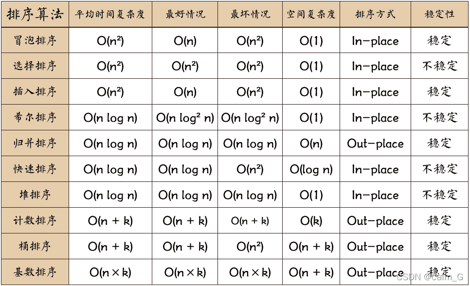

关于网站
Rust学习笔记

Rust学习资源整合💥
Rust Boom 是一个我在学习使用 Rust 的时候，对 Rust 的一些难点的解决方法以及一些 Rust 开源的好玩的库、书籍、文章的整理，希望可以帮助更多的 Rust 初学者来翻过 Rust 这座大山。
TOC
- Rust学习资源整合💥
- TOC
- Blasting
- Book
- Rust 语言圣经中文版
- Rust 程序设计语言中文版
- 通过例子学 Rust 中文版
- RustPrimer
- Rust 秘典中文版
- Rust 参考手册 中文版
- Rust Cookbook 中文版
- Rusty Book( 锈书 )
- Rust 异步编程指南
- Rust 语言实战
- Rust 算法题解
- Rust 设计模式 中文版
- Rust API 编写指南 中文版
- Rust 宏小册(tlborm)
- 嵌入式 Rust 编程
- Rust RFC Book (提案书)
- Rust Unstable Book (不稳定特性书)
- Rust 版本指南
- Rust 标准库手册中文版
- Rustt 一个优秀 Rust 文档翻译仓库
- Video
- Article
- IDE
- Framework
- Applications
- Community
- Incident
- Note
- License
Blasting
我自己写的一些关于 Rust 特殊问题的处理和解决方案。
Book
Rust 的书。
Rust 语言圣经中文版


Rust 语言真的好：连续七年成为全世界最受欢迎的语言、没有 GC 也无需手动内存管理、性能比肩 C++/C 还能直接调用它们的代码、安全性极高 - 总有公司说使用 Rust 后以前的大部分 bug 都将自动消失、全世界最好的包管理工具 Cargo 等等。但...

在线文档：Rust 语言圣经 - Rust 语言圣经(Rust Course)
Rust 程序设计语言中文版
Rust 程序设计语言的本质实际在于 赋能（empowerment）：无论你现在编写的是何种代码，Rust 能让你在更为广泛的编程领域走得更远，写出自信。（这一点并不显而易见）
举例来说，那些“系统层面”的工作涉及内存管理、数据表示和并发等底层细节。从传统角度来看，这是一个神秘的编程领域，只为浸润多年的极少数人所触及，也只有他们能避开那些臭名昭著的陷阱。即使谨慎的实践者，亦唯恐代码出现漏洞、崩溃或损坏。
Rust 破除了这些障碍：它消除了旧的陷阱，并提供了伴你一路同行的友好、精良的工具。想要 “深入” 底层控制的程序员可以使用 Rust，无需时刻担心出现崩溃或安全漏洞，也无需因为工具链不靠谱而被迫去了解其中的细节。更妙的是，语言设计本身会自然而然地引导你编写出可靠的代码，并且运行速度和内存使用上都十分高效。
已经在从事编写底层代码的程序员可以使用 Rust 来提升抱负。例如，在 Rust 中引入并行是相对低风险的操作，因为编译器会替你找到经典的错误。同时你可以自信地采取更加激进的优化，而不会意外引入崩溃或漏洞。
但 Rust 并不局限于底层系统编程。它表达力强、写起来舒适，让人能够轻松地编写出命令行应用、网络服务器等各种类型的代码——在本书中就有这两者的简单示例。使用 Rust 能让你把在一个领域中学习的技能延伸到另一个领域：你可以通过编写网页应用来学习 Rust，接着将同样的技能应用到你的 Raspberry Pi（树莓派）上。
本书全面介绍了 Rust 为用户赋予的能力。其内容平易近人，致力于帮助你提升 Rust 的知识，并且提升你作为程序员整体的理解与自信。欢迎你加入 Rust 社区，让我们准备深入学习 Rust 吧！
—— Nicholas Matsakis 和 Aaron Turon
在线文档：Rust 程序设计语言
配套视频：Rust 编程语言入门教程（Rust 语言/Rust 权威指南配套）【已完结】
通过例子学 Rust 中文版


Rust 是一门注重安全（safety）、速度（speed）和并发（concurrency）的现代系统编程语言。Rust 通过内存安全来实现以上目标，但不使用垃圾回收机制（garbage collection, GC）。
《通过例子学 Rust》（Rust By Example, RBE）内容由一系列可运行的实例组成，通过这些例子阐明了各种 Rust 的概念和基本库。想获取这些例子外的更多内容，不要忘了安装 Rust 到本地并查阅官方标准库文档。另外为了满足您的好奇心，您还可以查阅本网站的源代码。
在线文档：简介 - 通过例子学 Rust 中文版 (rustwiki.org)
文档仓库：rust-lang-cn/rust-by-example-cn: Rust By Example 中文版(包含在线代码编辑器) (github.com)
RustPrimer


给初学者的 Rust 中文教程。
在线文档：Introduction · RustPrimer (gitbooks.io)
Rust 秘典中文版


Rust 秘典挖掘了你在编写不安全 Rust 程序时需要了解的所有可怕的细节。
如果你希望在编写 Rust 程序的过程中获得长久而快乐的职业生涯，你应该现在回头，忘记你曾经看过这本书。 它没有必要。 然而，如果你打算编写不安全代码——或者只是想深入了解语言的内涵——这本书包含了很多有用的信息。
在线文档：介绍 - Rust 秘典（死灵书） (purewhite.io)
文档仓库：rust-lang-cn/nomicon-zh-Hans: Rust 死灵书简体中文翻译 (github.com)
Rust 参考手册 中文版


本书是 Rust 编程语言的主要参考资料。它提供了三种材料:
- 非正式地描述每个语言结构及其使用的章节。
- 非正式描述内存模型、并发模型、运行时服务、链接模型和调试设施的章节。
- 附录章节提供了影响设计的语言的原理和参考。
在线文档：简介 - Rust 参考手册 中文版 (rustwiki.org)
文档仓库：rust-lang-cn/reference-cn: Rust 参考手册——Chinese translation of The Rust Reference (github.com)
Rust Cookbook 中文版


《Rust Cookbook 中文版》是 Rust 程序设计语言（Rust 官方教程简体中文版）的简要实例示例集合：展示了在 Rust 生态系统中，使用各类 crate 来完成常见编程任务的良好实践。
在线文档：总览 - Rust Cookbook 中文版 (rustwiki.org)
Rusty Book( 锈书 )


在 Rust 元宇宙，夸奖别人的最高境界就是
rusty: 今天你"锈"了吗? 你的 Rust 代码好锈啊！而本书，就是精选了各种开源库和代码片段，帮助大家打造优"锈"的 Rust 项目。总之，如果有以下需求，那看锈书就对了：
- 想要知道现在优秀的、关注度高的 Rust 项目有哪些
- 发现一些好玩、有趣、酷炫的开源库
- 需要寻找某个类型的库，例如，一个 HTTP 客户端或 ProtoBuffer 编码库，要求是好用、更新活跃、高质量
- 想要寻找常用操作的代码片段，用于熟悉 Rust 或者直接复制粘贴到自己的项目中，例如文件操作、数据库操作、HTTP 请求、排序算法、正则等
在线文档：Rusty Book - Rusty Book(锈书)
Rust 异步编程指南


该书是中文 Rust 教程 <<Rust 语言圣经>> 中的镜像专题，高质量手翻 Asynchronous Programming in Rust， 深入讲述了如何编写 Rust 高并发异步程序。
配套视频：Rust Async 异步编程（完结）
Rust 语言实战


Rust 语言实战 的目标是通过大量的实战练习帮助大家更好的学习和上手使用 Rust 语言。书中的练习题非常易于使用：你所需的就是在线完成练习，并让它通过编译。
在线文档：关于 pracitce.rs - Rust By Practice( Rust 练习实践 )
Rust 算法题解


Rust 作为一门现代化的系统编程语言，拥有与 C/C++ 类似的性能，同时又能做非常底层的性能优化，因此非常适合写算法和 leetcode。
algos涵盖了各种常用算法和数据结构的代码实现，以及 leetcode 题解，同时对于相关算法还提供了中文文档和注释，可以帮助大家更好、更快的学习。
在线文档：Rust 算法教程 - Rust 算法教程 The Algos (algorithms)
Rust 设计模式 中文版


有很多问题有相同的形式。 因为 Rust 不是面向对象的语言，所以设计模式与其他面向对象语言的设计模式也有所不同。 虽然细节上有所不同，但他们还是有很多相同之处：
在线文档：引言 - Rust 设计模式 (chuxiuhong.com)
文档仓库：chuxiuhong/chuxiuhong-rust-patterns-zh: Rust 设计模式中文翻译 (github.com)
Rust API 编写指南 中文版


这是一组关于如何设计和呈现 Rust APIs 的建议。 这些建议主要由 Rust library 团队编写， 总结了 Rust 生态下构建标准库和其他 crates 的经验。
在线文档：关于本书 - Rust API Guidelines（Rust API 编写指南） (zjp-cn.github.io)
文档仓库：zjp-CN/api-guidelines: Rust API Guidelines 中文翻译版 (github.com)
Rust 宏小册(tlborm)


本书试图提炼出一份 Rust 社区对 Rust 宏知识的集锦。
在线文档：Rust 宏小册 中文版 - 《Rust 宏小册 中文版》 - 书栈网 · BookStack
文档仓库：DaseinPhaos/tlborm-chinese: Rust 宏小册, the Chinese translation of tlborm. (github.com)
嵌入式 Rust 编程


有关如何使用 Rust 编程语言为裸机（微控制器）设备开发固件的文档
在线文档：简介 - The Embedded Rust Book (stevenbai.top)
文档仓库：nkbai/book: rust 嵌入式编程书籍的翻译，原书地址 https://rust-embedded.github.io/book/
Rust RFC Book (提案书)


“RFC”（征求意见）过程旨在为 Rust 的更改（例如新功能）提供一致且受控的路径，以便所有利益相关者都可以对项目的方向充满信心。
在线文档：Introduction - The Rust RFC Book (rust-lang.github.io)
文档仓库：rust-lang/rfcs: RFCs for changes to Rust (github.com)
Rust Unstable Book (不稳定特性书)
这是一本记录 rust 不稳定特性的一本书。
在线文档：The Unstable Book - The Rust Unstable Book (rust-lang.org)
文档仓库：rust/src/doc/unstable-book at master · rust-lang/rust (github.com)
Rust 版本指南


这个文档有中文版，但是我更建议看英文版，中文版更新不是很及时。 这本书解释了“版本”的概念，即 Rust 开发的主要新时代。你可以在线阅读这本书。
在线文档：Introduction - The Edition Guide (rustwiki.org)
文档仓库：rust-lang/edition-guide: A guide to changes between various editions of Rust (github.com)
Rust 标准库手册中文版
Rust 标准库是可移植 Rust 软件的基础，这是一组针对 更广泛的 Rust 生态系统 的最小且经过实战测试的共享抽象。 它提供了核心类型，例如
Vec和Option，库定义的对 语言原语 的操作，标准库宏，I/O 和 多线程，以及许多 其他 东西。默认情况下，
std可用于所有 Rust crates。因此，可以通过use语句使用路径std来访问标准库，就像在use std::env中一样。
在线文档：std - Rust (rustwiki.org)
Rustt 一个优秀 Rust 文档翻译仓库


Rustt (读音 / rʌsˈti /) 是 RustCn 翻译计划的英文缩写，负责将国外优秀的技术文章、学习教程、新闻资讯翻译成中文。
文档仓库：rustlang-cn/Rustt: 🥇RustCn 翻译计划，代号 Rustt。这里有国内最优质、最实时的 Rust 技术文章、学习资料和新闻资讯，欢迎大家 🌟 订阅。 (github.com)
Video
该模块收集一些 Rust 相关的教程视频，视频主要来源 B 站和知乎。
- Rust 编程语言入门教程（Rust 语言/Rust 权威指南配套）【已完结】
- Rust Async 异步编程（完结）
- Rust Async 异步编程 简易教程
- Rust Web 全栈开发教程【完结】
- 使用 Async Rust 构建简单的 P2P 节点【完结】
- 从零开始创建一个 WebAssembly 游戏
- Rust 面试题
- 可视化 Rust 各数据结构的内存布局(必看)
Article
收集一些 Rust 比较好的文章以及一些刊报。
- 安装 Rust - Rust 程序设计语言 (rust-lang.org)
- 浅析 rust 的内存管理 - 知乎 (zhihu.com)
- Rust: Lifetime 解惑， 生命周期还在 - 知乎 (zhihu.com)
- Rust 中的 String,&str 和 str 都是什么？ - 知乎 (zhihu.com)
- 类型的大小 - 知乎 (zhihu.com)
- 如何深入浅出地理解 Rust 中的 Pin 和 Unpin? - 知乎 (zhihu.com)
- rust 语言基础学习: rust 所有权之 Move 和 Copy 语义 - 架构小白|青蛙小白|关注程序开发、互联网技术、云原生 (frognew.com)
- Top 23 Rust GUI Projects (Jul 2022) (libhunt.com)
- 你见过哪些让你瞠目结舌的 Rust 代码技巧？ - 知乎 (zhihu.com)
- rustlang-cn/rust-weekly: Rust 语言周刊，每周五发布，精选过去一周的技术文章、业界新闻、开源项目和 Rust 语言动态 (github.com)
- 【每周一知】Rust 中的三种设计模式 - Rust 语言中文社区 (rustcc.cn)
IDE
推荐一些小编用过的编辑器
VSCode（首推）
目前开发 Rust 最好的编辑器，需要安装插件。
插件推荐
- rust-analyzer - Visual Studio Marketplace
- Better TOML - Visual Studio Marketplace
- Cargo - Visual Studio Marketplace
- crates - Visual Studio Marketplace
Framework
Rust 开发的框架。
GUI
Tarui


Tauri 是一个为所有主要桌面平台构建微小、速度极快的二进制文件的框架。开发人员可以集成任何编译为 HTML、JS 和 CSS 的前端框架，以构建其用户界面。应用程序的后端是一个 Rust 的二进制文件，前端可以与之交互。
Tauri 应用程序中的用户界面目前将 tao 用作 macOS 和 Windows 上的窗口处理库，并通过 Tauri 团队孵化和维护 WRY 在 Linux 上使用 gtk，该团队利用 macOS 上的 WebKit、Windows 上的 WebView2 和 Linux 上的 WebKitGTK，为系统 webview（以及菜单和任务栏等其他好东西）创建了统一的界面。
在线网站：Build smaller, faster, and more secure desktop applications with a web frontend | Tauri Appshttps://tauri.studio/
egui


egui 是一个简单、快速、高度可移植的 Rust 即时模式 GUI 库。egui 可运行于 Web, 原生（Native） 甚至 你喜欢的的游戏引擎 （即将到来）。
egui 旨在成为最易用的 Rust GUI 库，用最简单的方式创建 Web 应用程序。
egui 可以在任何可以绘制纹理三角形（textured triangles）的地方使用，这意味着你可以轻松地地将它集成到你选择的游戏引擎中。
中文文档：egui-doc-cn/README_zh-hans.md at main · Re-Ch-Love/egui-doc-cn (github.com)
fltk-rs


FLTK 图形用户界面库的 Rust 绑定。 fltk crate 是一个跨平台的轻量级 gui 库，可以静态链接以生成小型、自包含和快速的 gui 应用程序。
代码仓库：fltk-rs/fltk-rs: Rust bindings for the FLTK GUI library. (github.com)
在线文档：Home - fltk book (fltk-rs.github.io)
iced


Rust 的跨平台 GUI 库，专注于简单性和类型安全。灵感来自 Elm。
代码仓库：iced-rs/iced: A cross-platform GUI library for Rust, inspired by Elm (github.com)
druid


Druid 是一个实验性的 Rust 原生 UI 工具包。它的主要目标是提供优美的用户体验。这个目标有很多因素，包括性能、丰富的交互调色板（因此有一个小部件库来支持它们），以及与本机平台的良好配合。有关详细信息，请参阅目标部分。 Druid 目前的发展很大程度上是由它在 Runebender 中的使用推动的，这是一种新的字体编辑器。 我们一直在 crates.io 上定期发布 Druid，但它正在积极开发中，它的 API 可能会改变。所有更改都记录在更改日志中。 有关一些关键概念的概述，请参阅（正在进行的工作）Druid 书。
代码仓库：linebender/druid: A data-first Rust-native UI design toolkit. (github.com)
Dioxus


Dioxus 是一个可移植、高性能的框架，用于在 Rust 中构建跨平台的用户界面。
Dioxus 可用于制作 网页程序、桌面应用、静态站点、移动端应用。
Dioxus 为不同的平台都提供了很好的开发文档。
如果你会使用 React ，那 Dioxus 对你来说会很简单。
并且他还有 tui 的渲染器DioxusLabs/rink: Build reactive terminal user interfaces using Rust and Dioxus. (github.com)
代码仓库：DioxusLabs/dioxus: Friendly React-like GUI library for desktop, web, mobile, and more. (github.com)
中文文档：dioxus/ZH_CN.md at master · DioxusLabs/dioxus (github.com)
TUI
tui-rs


tui-rs 是一个 Rust 库，用于构建丰富的终端用户界面和仪表板。它深受 Javascript 库 blessed-contrib 和 Go 库 termui 的启发。

代码仓库：fdehau/tui-rs: Build terminal user interfaces and dashboards using Rust (github.com)
游戏开发
Bevy


Bevy 是 Rust 内置的令人耳目一新的简单数据驱动游戏引擎。它永远是免费和开源的！
代码仓库：bevyengine/bevy: A refreshingly simple data-driven game engine built in Rust (github.com)
异步运行时
Tokio


Tokio 是 Rust 编程语言的异步运行时。它提供了编写网络应用程序所需的构建块。它提供了针对广泛系统的灵活性，从具有数十个内核的大型服务器到小型嵌入式设备。
在线网站：Tokio - An asynchronous Rust runtime
中文文档：Rustt/Books/Tokio-Tutorial at main · rustlang-cn/Rustt (github.com)
前端相关
Yew


Yew 是一个设计先进的 Rust 框架，目的是使用 WebAssembly 来创建多线程的前端 web 应用。
代码仓库：yewstack/yew: Rust / Wasm framework for building client web apps (github.com)
资源仓库：jetli/awesome-yew: 😎 A curated list of awesome things related to Yew / WebAssembly. (github.com)
Deno


Deno 是一个简单、现代且安全的 JavaScript 和 TypeScript 运行时，它使用 V8 并内置于 Rust。
代码仓库：denoland/deno: A modern runtime for JavaScript and TypeScript. (github.com)
SWC


一个代码打包器。
SWC（代表 Speedy Web Compiler）是一个用 Rust 编写的超快速 TypeScript / JavaScript 编译器。它同时是 Rust 和 JavaScript 的库。如果您使用 Rust 的 SWC，请参阅 rustdoc，对于大多数用户，您使用该库的入口点将是解析器。
代码仓库：swc-project/swc: Rust-based platform for the Web (github.com)
Parcel


Parcel 是用于 web 的零配置构建工具。它将优秀的开箱即用的开发经验与可扩展的体系结构结合在一起，可以将您的项目从刚开始的阶段转变为大规模的生产应用程序。
代码仓库：parcel-bundler/parcel: The zero configuration build tool for the web. 📦🚀 (github.com)
Rome


Rome 是用于 JavaScript、TypeScript、JSON、HTML、Markdown 和 CSS 的格式化程序、linter、捆绑程序等。 Rome 旨在取代 Babel、ESLint、webpack、Prettier、Jest 等。 Rome 统一了以前是独立工具的功能。建立在一个共享的基础上，我们可以为处理代码、显示错误、并行化工作、缓存和配置提供一种内聚的体验。 Rome 有很强的约定，旨在具有最小的配置。阅读更多关于我们的项目理念的信息。 Rome 是用 Rust 编写的。 Rome 拥有一流的 IDE 支持，具有复杂的解析器，可以完全保真地表示源文本和一流的错误恢复。 Rome 是麻省理工学院根据贡献者契约行为准则获得许可和管理的。
napi-rs

用于在 Rust 中构建已编译的 Node.js 附加组件的最小库。
代码仓库：napi-rs/napi-rs: A framework for building compiled Node.js add-ons in Rust via Node-API (github.com)
WebAssembly
wasmtime


WebAssembly 的运行时
代码仓库：bytecodealliance/wasmtime: A standalone runtime for WebAssembly (github.com)
wasmer


WebAssembly 又一个运行时
代码仓库：wasmerio/wasmer: 🚀 The leading WebAssembly Runtime supporting WASI and Emscripten (github.com)
WasmEdge


WebAssembly 又又一个运行时
WasmEdge 是一个轻量级、高性能和可扩展的 WebAssembly 运行时，适用于云原生、边缘和去中心化应用程序。它为无服务器应用程序、嵌入式功能、微服务、智能合约和物联网设备提供支持。
WASI

为 WebAssembly 提供内部调用接口的库
WASI 不是一个单一的标准系统接口，而是标准化 API 的模块化集合。不需要实现任何 API 即可具有兼容的运行时。相反，主机环境可以选择哪些 API 对其用例有意义。
代码仓库：WebAssembly/WASI: WebAssembly System Interface (github.com)
网络
libp2p


构建 p2p 网络的包 运行您的网络应用程序，不受运行时和地址服务的影响，与它们的位置无关。
代码仓库：libp2p/rust-libp2p: The Rust Implementation of the libp2p networking stack. (github.com)
rathole


安全、稳定、高性能的内网穿透工具，用 Rust 语言编写
rathole，类似于 frp 和 ngrok，可以让 NAT 后的设备上的服务通过具有公网 IP 的服务器暴露在公网上。
中文文档：rathole/README-zh.md at main · rapiz1/rathole (github.com)
Crust


Rust 中具有 NAT 遍历的可靠 p2p 网络连接。任何无服务器、去中心化项目最需要的库之一。
服务端
Rocket


Rocket是 Rust 生态系统中对初学者来说最容易上手的 web 框架。
它是高度可定制化的，可以快速启动一个新的应用程序。同时，它避免了许多不必要的文件。
与 Actix Web 不同的是，该框架运行在 Rust 语言的“实验”版本)上。
代码仓库：SergioBenitez/Rocket: A web framework for Rust. (github.com)
Actix Web


Actix Web 是一个功能强大、实用且速度极快的 Rust Web 框架.
- 支持 HTTP/1.x 和 HTTP/2
- 流和流水线
- 带有可选宏的强大请求路由
- 完全兼容 Tokio
- 保持活动和缓慢的请求处理
- 客户端/服务器 WebSocket 支持
- 透明内容压缩/解压缩（br、gzip、deflate、zstd）
- 多部分流
- 静态资产
- 使用 OpenSSL 或 Rustls 的 SSL 支持
- 中间件（记录器、会话、CORS 等）
- 与 awc HTTP 客户端集成
- 在稳定的 Rust 1.57+ 上运行
warp


一个超级简单、可组合的 web 服务器框架，用于提高 warp 速度。 warp 的基本构建块是过滤器：它们可以组合和组合来表达对请求的丰富需求。 由于其过滤器系统，warp 提供了这些开箱即用的功能：
- 路径路由和参数提取
- 标头要求和提取
- 查询字符串反序列化
- JSON 和表单主体
- 多部分表单数据
- 静态文件和目录
- 网络套接字
- 访问记录
- Gzip、Deflate 和 Brotli 压缩
代码仓库：seanmonstar/warp: A super-easy, composable, web server framework for warp speeds. (github.com)
poem


一个功能齐全且易于使用的 Web 框架，采用 Rust 编程语言。
axum


axum 是一个专注于人体工程学和模块化的 Web 应用程序框架。
代码仓库：tokio-rs/axum: Ergonomic and modular web framework built with Tokio, Tower, and Hyper (github.com)
Salvo


Salvo 是一个极其简单且功能强大的 Rust Web 后端框架. 仅仅需要基础 Rust 知识即可开发后端服务.
代码仓库：salvo-rs/salvo: Salvo is a powerful and simplest web server framework in Rust world (github.com)
序列化
A-JSON


gjson 的 Rust 移植，通过 dotpath 语法获取 JSON 值。原名为：rust-ajson
代码仓库：importcjj/rust-ajson: Rust port of gjson，get JSON value by dotpath syntax (github.com)
json-rust


轻松解析和序列化 JSON。
代码仓库：maciejhirsz/json-rust: JSON implementation in Rust (github.com)
pikkr


JSON 解析器直接获取值而不在 Rust 中执行标记化。
Serde JSON


Serde 是一个用于高效且通用地序列化和反序列化 Rust 数据结构的框架。
代码仓库：serde-rs/json: Strongly typed JSON library for Rust (github.com)
quick-xml


高性能 xml pull reader/writer。 几乎是零拷贝（尽可能使用 Cow） 易于分配内存（API 提供了一种重用缓冲区的方法） 支持各种编码（具有编码功能）、命名空间解析、特殊字符。
代码仓库：tafia/quick-xml: Rust high performance xml reader and writer (github.com)
日期处理
time


日期和时间库。与标准库完全互操作。大部分与#![no_std] 兼容。
代码仓库：time-rs/time: Simple time handling in Rust (github.com)
chrono


它的目标是成为一个功能完整的时间库的超集。
代码仓库：chronotope/chrono: Date and time library for Rust (github.com)
httpdate


HTTP 的日期和时间工具。
代码仓库：pyfisch/httpdate: HTTP date parsing and formatting (github.com)
编码库
base64


故名思义就是 base64 的编码库。
代码仓库：marshallpierce/rust-base64: base64, in rust (github.com)
hmac


用纯 Rust 编写的消息认证代码算法
代码仓库：RustCrypto/MACs: Message authentication code algorithms written in pure Rust (github.com)
jwt


JSON Web 令牌库。
代码仓库：mikkyang/rust-jwt: JSON Web Token library for Rust (github.com)
josekit


和上面的库差不多，功能更强大。
JOSE（Javascript 对象签名和加密：JWT、JWS、JWE、JWA、JWK）库，基于 Rust 的 OpenSSL。
sha


Rust 安全哈希算法 (SHA) 内在库。
代码仓库：andydude/rust-sha: Rust Cryptography Intrinsics (github.com)
数据库
SeaORM


SeaORM 是一种关系 ORM，可帮助您使用熟悉的动态语言在 Rust 中构建 Web 服务。
目前支持:
sqlx-mysql- SQLx MySQLsqlx-postgres- SQLx PostgreSQLsqlx-sqlite- SQLx SQLite
代码仓库：SeaQL/sea-orm: 🐚 An async & dynamic ORM for Rust (github.com)
rbatis


受 Mybatis 和 MybatisPlus 启发，用 Rust 编写的高性能、安全、动态 SQL（编译时）ORM 框架。
- - 编译时动态 sql（mybatis 动态 sql 标签）、全异步(Future)、生产实践(abs_admin)、
- - 内存安全，协程安全，事务安全(防忘提交)，百分百 safe 代码
- - 多种插件，分页/逻辑删除/sql 拦截器/CRUD/Wrapper/PySQL/HtmlSQL
支持数据库：
数据库 已支持 Mysql √ Postgres √ Sqlite √ Mssql/Sqlserver √(50%) MariaDB(Mysql) √ TiDB(Mysql) √ CockroachDB(Postgres) √
代码仓库：rbatis/rbatis: Rust High Performance compile-time ORM(RBSON based) (github.com)
MongoDB Rust Driver


此存储库包含官方支持的 MongoDB Rust 驱动程序，这是一个客户端库，可用于与 Rust 应用程序中的 MongoDB 部署进行交互。它使用 bson crate 来支持 BSON。该驱动程序包含一个完全异步的 API，它支持 tokio（默认）或 async-std，具体取决于设置的功能标志。驱动程序还有一个同步 API，可以通过功能标志启用。
代码仓库：mongodb/mongo-rust-driver: The official MongoDB Rust Driver (github.com)
wither


该项目的主要目标是基于数据模型为 MongoDB 提供一个简单、健全且可预测的接口。如果在任何时候该系统可能会妨碍您，您可以直接访问底层驱动程序。该项目针对 MongoDB 3.6、4.0、4.2 和 4.4 进行了测试。 好消息！ Wither 现在基于官方的 MongoDB Rust 驱动程序。由于驱动程序的进步，Wither 现在是完全异步的。简单地镜像底层 MongoDB 驱动程序的功能，Wither 支持以下运行时： tokio-runtime（默认）激活 tokio 运行时。 async-std-runtime 激活 async-std 运行时。 由于底层驱动程序的更新，Model trait 以及 Model 派生宏有相当多的重大变化。详细信息可以在更改日志和文档中找到。此外，现在默认情况下一切都是异步的，并且同步接口已从 repo 中完全删除。
代码仓库：thedodd/wither: An ODM for MongoDB built on the official MongoDB Rust driver. (github.com)
redis-rs


Redis-rs 是 Rust 的高级 redis 库。它通过非常灵活但低级的 API 提供对所有 Redis 功能的便捷访问。它使用可自定义的类型转换特征，因此任何操作都可以返回您期望的类型的结果。这带来了非常愉快的开发体验。
代码仓库：redis-rs/redis-rs: Redis library for rust (github.com)
单元测试
mockall


适用于 Rust 的强大模拟对象库。
代码仓库：asomers/mockall: A powerful mock object library for Rust (github.com)
几何计算
geo


geo crate 提供了点、线串和多边形等地理空间基元类型，并提供了算法和操作，例如： 面积和质心计算
- 简化和凸包操作
- 欧几里得和哈弗辛距离测量
- 交叉口检查
- 仿射变换，例如旋转和平移。
⚠️：如果需要计算距离所有的坐标使用 f64，这是小编踩过的坑.
代码仓库：georust/geo: Geospatial primitives and algorithms for Rust (github.com)
图片处理
image-rs


这个 crate 提供了基本的图像处理功能和方法来转换各种图像格式。 提供的所有图像处理函数都对实现 GenericImageView 和 GenericImage 特征并返回 ImageBuffer 的类型进行操作。
代码仓库：image-rs/image: Encoding and decoding images in Rust (github.com)
音频处理
Symphonia


Symphonia 是一个纯 Rust 音频解码和媒体解复用库，支持 AAC、ALAC、FLAC、MKV、MP3、MP4、OGG、Vorbis、WAV 和 WebM。
功能介绍
- 解码支持最流行的音频编解码器，支持无间隙播放
- 解码最常见的媒体容器格式
- 读取大多数元数据和标签格式
- 自动检测格式和解码器
- 有效处理音频数据的基本音频原语
- 100%安全的 Rust
- 最小的依赖性
- 速度快，性能不打折扣!
此外，计划的功能包括
- 提供一个 C 语言的 API，以便与其他语言集成
- 为网络使用提供 WASM API
视频处理
ffmpeg-sys-next


Rust 的一个视频处理库，绑定自 ffmpeng。
代码仓库：zmwangx/rust-ffmpeg-sys: FFmpeg bindings for Rust. (github.com)
文档处理
lopdf


用于 PDF 文档操作的 Rust 库。
代码仓库：J-F-Liu/lopdf: A Rust library for PDF document manipulation. (github.com)
pdf-rs


用于读取、操作和编写 PDF 文件的 Rust 库。
代码仓库：pdf-rs/pdf: Rust library to read, manipulate and write PDF files. (github.com)
calamine


Rust 编写的 Excel/OpenDocument 电子表格文件阅读器/反序列化器。
docx-rs


一个带有 Rust/WebAssembly 的.docx 文件编写器。
代码仓库：bokuweb/docx-rs: A .docx file writer with Rust/WebAssembly. (github.com)
AST
pandoc_ast


反序列化和序列化 markdown ast 以编写 pandoc 过滤器
代码仓库：oli-obk/pandoc-ast (github.com)
自动化
headless_chrome


一个无头浏览器。
通过 DevTools 协议控制无头 Chrome 或 Chromium 的高级 API。它是 Puppeteer 的 Rust 等价物，一个由 Chrome DevTools 团队维护的 Node 库。 它不是 100% 与 Puppeteer 兼容的功能，但这里足以满足大多数浏览器测试/网络爬虫用例，并且有几个“高级”功能，例如：
- 网络请求拦截
- JavaScript 覆盖率监控
- 打开隐身窗口
- 截取元素或整个页面的屏幕截图
- 将页面保存为 PDF
- 'headful' 浏览
- 自动下载适用于 Linux/Mac/Windows 的“已知良好”Chromium 二进制文件
- 扩展预加载
系统相关
screenshots


适用于 MacOS、Windows、Linux(X11、wayland) 的跨平台截图库。
Applications
用 Rust 编写的一些实用的应用软件。
GUI
AppFlowy


⭐️ Notion 的开源替代品 ⭐️

Lapce


Lapce 是用纯 Rust 编写的，用户界面是 Druid（也是用 Rust 编写）。它是用 Xi-Editor 的 Rope Science 设计的，使得计算速度快如闪电，并利用 OpenGL 进行渲染。关于 Lapce 功能的更多信息可以在主网站上找到，用户文档可以在 GitBook 上找到。

一个有点像是 VSCode 的编辑器。
代码仓库：lapce/lapce: Lightning-fast and Powerful Code Editor written in Rust (github.com)
Neovide
这是 Neovim（一个经过积极重构和更新的 Vim 编辑器）的简单图形用户界面。在可能的情况下，有一些图形改进，但在功能上，它应该像终端用户界面一样。

仓库链接：neovide/neovide: No Nonsense Neovim Client in Rust (github.com)
Rustdesk

面向所有人的开源虚拟/远程桌面基础架构！开源的 TeamViewer 替代方案。显示和控制您的 PC 和安卓设备。

仓库链接：rustdesk/rustdesk：为每个人提供开源虚拟/远程桌面基础架构！开源的 TeamViewer 替代方案。显示和控制您的 PC 和安卓设备。 (github.com)
TUI
GitUI


GitUI 为您提供了 git GUI 的舒适性，但就在您的终端上.

代码仓库：extrawurst/gitui: Blazing 💥 fast terminal-ui for git written in rust 🦀 (github.com)
CLI
bore


Rust 中的一个现代、简单的 TCP 隧道，它将本地端口暴露给远程服务器，绕过标准 NAT 连接防火墙。这就是它所做的一切：不多也不少。
代码仓库：ekzhang/bore: 🕳 bore is a simple CLI tool for making tunnels to localhost (github.com)
cloc-rs


快速计算或计算源代码行和注释的差异。
macbox :: github/kubernetes » time cloc . 72.5313 secs ┌───────────────────────────────────────────────────────────────────────────────────────┐ │ Language files size blank comment code │ ├───────────────────────────────────────────────────────────────────────────────────────┤ │ Autoconf 533 515.91 KB 100 992 21399 │ │ Bash 148 420.09 KB 1183 592 10153 │ │ C 149 149.31 KB 970 1671 3065 │ │ C Header 25 6.94 MB 9975 109175 20975 │ │ GNU Style Assembly 2946 8.96 MB 48895 43894 285473 │ │ Go 463514 4.44 GB 13873486 22200757 106047029 │ │ Html 50 950.00 B 0 0 50 │ │ Ini 24 5.70 KB 48 0 240 │ │ JSON 21759 1011.18 MB 100 0 23771190 │ │ Lua 25 419.92 KB 750 100 11875 │ │ Markdown 18270 162.09 MB 530001 0 1794019 │ │ Plain Text 1161 5.50 MB 7186 0 176276 │ │ PowerShell 174 2.92 MB 8947 74817 1149 │ │ Protocol Buffer 4489 51.42 MB 220374 684092 425720 │ │ Python 175 581.23 KB 2975 5500 8750 │ │ SVG 101 1.22 MB 101 101 9532 │ │ Shell 9470 56.70 MB 189547 361195 998808 │ │ Toml 299 342.58 KB 3667 4325 7223 │ │ Yaml 38405 140.98 MB 31308 31043 5317632 │ ├───────────────────────────────────────────────────────────────────────────────────────┤ │ Sum 561717 5.86 GB 14929613 23518254 138910558 │ └───────────────────────────────────────────────────────────────────────────────────────┘ cloc . 23.21s user 153.47s system 239% cpu 1:13.72 total
cargo-edit


该工具扩展了 Cargo，允许您通过从命令行修改 Cargo.toml 文件来添加、删除和升级依赖项。 当前可用的子命令：
代码仓库：killercup/cargo-edit: A utility for managing cargo dependencies from the command line. (github.com)
Database
cnosdb


一个具有高性能、高压缩率和高实用性的开源分布式时间序列数据库。
仓库地址：cnosdb/README_CN.md at main · cnosdb/cnosdb (github.com)
Community
Rust 相关的社区。
- Rust 语言中文社区-首页 (rustcc.cn)
- Rust 技术论坛 | Rust 语言技术论坛 - 优质的 Rust 开发者学习社区 (learnku.com)
- The Rust Programming Language Forum (rust-lang.org)
Incident
Rust 相关的热点新闻或事件。
Note
封面图来自：Rustacean.net: Home of Ferris the Crab
徽章来自：Shields.io: Quality metadata badges for open source projects
如果你有自己用 Rust 开发的软件或者推荐的资源都可以提交 PR，在这里感谢所有为 Rust 生态贡献的开发者，因为只有越来越丰富的生态才能吸引更多的人来学习使用 Rust。
最后希望 Rust 越来越牛 X。
如果文档有用请帮帮忙点一下 star，收集整理不易，也可以关注我们公众号【Rust 编程指南】获取实时推送的文章。

License
MIT
mut 和 &mut
#![allow(unused)] fn main() { // a拥有所有权 let a = String::from("hello rust!"); // 这行代码会报错，因为a不可变，即不可更新绑定 // a = "foo".to_string(); // mut var 和 &var // b拥有所有权，并且b可以更新绑定 let mut b = "Hello Rust".to_string(); b.push_str("foo"); b = "foo".to_string(); // b可以更新绑定 let c = b; // 这行代码会报错，因为b的所有权转移给了c // println!("{}", b); // c绑定的资源借给d使用，d只有资源c的读权限 let d = &c; // 这行代码会报错，因为d只有资源c的读权限 // d.push_str("bar"); // ------------------------------------- let mut e = "Hello Rust".to_string(); // e绑定的资源借给f使用，f有资源的读写权限，这要求e必须本身可读写，即可变 let f = &mut e; f.push_str("hi"); // 这行代码会报错，因为f不可变，即不可更新绑定 // f = &mut "foo".to_string(); // ---------------------------------------- let mut g = "Hello Rust".to_string(); // g绑定的资源借给h使用，h有资源的读写权限，这要求e必须本身可读写，即可变。且h可以更新绑定，即h可变。 let mut h = &mut g; h.push_str("hi"); h = &mut "foo".to_string(); } // 含义：传参的时候，实参d绑定的资源D的所有权转移给c fn do1(c: String) {} // 含义：传参的时候，实参d将绑定的资源D借给c使用，c对资源D只读 fn do2(c: &String) {} // 含义：传参的时候，实参d将绑定的资源D借给c使用，c对资源D可读写 fn do3(c: &mut String) {} // 含义：传参的时候，实参d将绑定的资源D借给c使用，c对资源D可读写。同时，c可绑定到新的资源上面去（更新绑定的能力） fn do4(mut c: &mut String) {} // 函数参数里面，冒号左边的部分，mut c，这个mut是对函数体内部有效；冒号右边的部分，&mut String，这个 &mut 是针对外部实参传入时的形式化（类型）说明。
排序
比较排序
选择排序
基本思想
每一趟从待排序的数据元素中选出最小的（或者是最大的）的一个元素，顺序放在有序数列的最前（或最后）直到全部待排序的数据元素排完。
| 稳定性 | 平均时间复杂度 | 最坏时间复杂度 | 最优时间复杂度 | 空间复杂度 |
|---|---|---|---|---|
| 不稳定 | \(O(N^2)\) | \(O(N^2)\) | \(O(N^2)\) | \(O(1)\) |
// select_sort(a, n)
void select_sort(int a[], int n) {
for (int i = 0; i < n; i++) {
int min = i;
for (int j = i + 1; j < n; j++) {
if (a[j] < a[min]) {
min = j;
}
}
if (min != i) {
swap(a[min], a[i]);
}
}
}
冒泡排序
基本思想
每一趟排序中比较相邻数据是否逆序，如果逆序则交换两者。这样一轮下来最大的数据将冒泡到最后的位置，无序数据规模则变为了\(n - 1\)。经过\(n - 1\)轮排序后所有数据有序
| 稳定性 | 平均时间复杂度 | 最坏时间复杂度 | 最优时间复杂度 | 空间复杂度 |
|---|---|---|---|---|
| 稳定 | \(O(N^2)\) | \(O(N^2)\) | \(O(N)\) | \(O(1)\) |
// bubble_sort(a, n)
void bubble_sort(int a[], int n) {
bool flag = false;
// 这里i > 0 于 i >= 0 一致
for (int i = n - 1; i > 0; i--) {
for (int j = 0; j < i; j++) {
if (a[j] > a[j + 1]) {
flag = true;
swap(a[j], a[j + 1]);
}
}
if (!flag) {
break;
}
}
}
插入排序
基本思想
在已排好序的序列中寻找待排序元素的位置，并执行插入动作。需要注意的是在插入时需要将插入位置后的所有元素后移一位。
| 稳定性 | 平均时间复杂度 | 最坏时间复杂度 | 最优时间复杂度 | 空间复杂度 |
|---|---|---|---|---|
| 稳定 | \(O(N + k)\) | \(O(N^2)\) | \(O(N + k)\) | \(O(n + k)\) |
// insert_sort(a, n)
// 伪插入排序，小的冒泡的冒泡排序
void insert_sort_cp(int a[], int n) {
for (int i = 0; i < n - 1; i++) {
for (int j = i + 1; j >= 1; j--) {
if (a[j] < a[j - 1]) {
swap(a[j], a[j - 1]);
} else {
break;
}
}
}
}
// 插入排序
void insert_sort(int a[], int n) {
for (int i = 0; i < n; i++) {
int j = i - 1;
for (j; j >= 0; j--) {
if (a[j] < a[i]) {
break;
}
}
if (j != i - 1) {
int tmp = a[i];
int k = i - 1;
for (k; k > j; k--) {
a[k + 1] = a[k];
}
a[k + 1] = tmp;
}
}
}
其他排序算法
桶排序
基本思想
所有待排序的元素在一个明显的有限范围内，可以设计有限个有序桶，将待排序的元素装入对应的桶内，桶号就是待排序的元素，顺序输出则得到有序的序列。
| 稳定性 | 平均时间复杂度 | 最坏时间复杂度 | 最优时间复杂度 | 空间复杂度 |
|---|---|---|---|---|
| 稳定 | \(O(N^2)\) | \(O(N^2)\) | \(O(N)\) | \(O(1)\) |
// 桶的个数
int const N = 100010;
void bucket_sort(int a[], int n) {
int B[N];
for (int i = 0; i < n; i++) {
B[a[i]]++;
}
// 输出排序后的序列
for (int i = 0; i < N; i++) {
while (B[i]-- > 0) {
cout << i << " ";
}
}
}lowbit 运算
\(lowbit(n)\)定义为非负整数\(n\)在二进制表示下最低位的1和其后所有的0构成的数值。
例：\(lowbit(10) = lowbit((1010)_2) = 2 = (10)_2\)
推导公式
\begin{cases} lowbit(n) = n \& (\sim n + 1) \\ \sim n = -1 - n \\ lowbit(n) = n \& (\sim n + 1) = n \& -n \end{cases}
实例：求整数二进制表示下所有是1的位
int H[37];
for (int i = 0; i < 36; i++) {
H[(1ll << i) % 37] = i;
}
while(n > 0) {
cout << H[(n & -n) % 37] << " ";
n -= n & -n;
}
cout << endl;
注解：
\(H[2^k mod 37] = k\)
\(\forall k \in[0, 35], 2^k mod 37\) 互不相等，且恰好取遍整数 \(1\sim36\)
二分
整数二分
该写法确保答案处于闭区间 \([l, r]\) 内， 循环的终止条件为 \(l == r\)
- 模板1：在单调递增序 \(a\) 中查找 \(\ge x\) 的数中最小的一个（即 \(x\) 或 \(x\) 的后继)
int binary(vector<int>& a, int x) {
int l = 0; r = a.size() - 1;
while(l < r) {
int mid = (l + r) >> 1;
if (a[mid] >= x) {
r = mid;
} else {
l = mid + 1;
}
}
return a[l];
}
```
- 模板2：在单调递增序 \\(a\\) 中查找 \\(\le x\\) 的数中最大的一个（即 \\(x\\) 或 \\(x\\) 的前驱)
```cpp
int binary(vector<int>& a, int x) {
int l = 0; r = a.size() - 1;
while(l < r) {
int mid = (l + r + 1) >> 1;
if (a[mid] <= x) {
l = mid;
} else {
r = mid - 1;
}
}
return a[l];
}
注解： C++ stl 中的 lower_bound 和 upper_bound 可以在一个序列中二分查找某个整数 x 的 后继 和前驱。
实数二分
bool check(double mid) {
if (/*满足条件*/) {
return true;
} else {
return false;
}
}
// k 表示保留精度
void binary(int l, int r, int k) {
double esp = pow(10, -(k + 2));
while (l + esp < r) {
double mid = (l + r) / 2;
if (check(mid)) {
r = mid;
} else {
l = mid;
}
}
}
// 如果精度不容易确定可以直接固定循环100遍
for (int i = 0; i < 100; i++) {
double mid = (l + r) / 2;
if (check(mid)) {
r = mid;
} else {
l = mid;
}
}
离散化
假设 \(a[x], x \in n\) 其中 \(n\) 的范围较大但 \(a[]\) 元素较少且可能有重复，去重之后只有 \(m\) 个数。 将 \(a[x]\) 用 \(1 \sim m\) 之间的整数代替，且大小顺序不变，即是离散化。
思路
将 \(a\) 数组排序去重得到数组 \(b[1 \sim m]\)
如要查询整数 \(i\) 代替的数值，则返回 \(b[i]\)
如要查询 \(a[i]\) 被 \(1 \sim m\) 之间的哪个整数代替，则返回数组 \(b\) 中 二分查找 \(a[i]\) 的位置
// a 表示离散化前，b 表示离散化得到的结果
int a[n], b[m];
// 离散化
void discrate() {
// 排序
sort(a, a + n);
// 去重
int cnt = 0;
for (int i = 0; i < n; i++) {
if (i == 0 || a[i] !+ a[i -1]) {
b[cnt++] = a[i];
}
}
}
// 二分查询 x 映射为哪个 1 ~ m 之间的整数
int query(int x) {
int l = 0, r = n - 1;
while (l < r) {
int mid = (l + r) >> 1;
if (b[mid] >= x) {
r = mid;
} else {
l = mid + 1;
}
}
return l;
}
基础算法
快速排序
题目描述
利用快速排序算法将读入的 \(N\) 个数从小到大排序后输出。
快速排序是信息学竞赛的必备算法之一。对于快速排序不是很了解的同学可以自行上网查询相关资料，掌握后独立完成。（C++ 选手请不要试图使用 STL，虽然你可以使用 sort 一遍过，但是你并没有掌握快速排序算法的精髓。）
输入格式
第 \(1\) 行为一个正整数 \(N\)，第 \(2\) 行包含 \(N\) 个空格隔开的正整数 \(a_i\)，为你需要进行排序的数，数据保证了 \(A_i\) 不超过 \(10^9\)。
输出格式
将给定的 \(N\) 个数从小到大输出，数之间空格隔开，行末换行且无空格。
样例 #1
样例输入 #1
5
4 2 4 5 1
样例输出 #1
1 2 4 4 5
提示
对于 \(20%\) 的数据，有 \(N\leq 10^3\)；
对于 \(100%\) 的数据，有 \(N\leq 10^5\)。
#include <iostream>
using namespace std;
const int N = 1e6 + 10;
int n;
int q[N];
void quick_sort(int q[], int l, int r) {
if (l >= r) return;
int x = q[l], i = l - 1, j = r + 1;
while(i < j) {
do i++; while(q[i] < x);
do j--; while(q[j] > x);
if(i < j) swap(q[i], q[j]);
}
quick_sort(q, l, j);
quick_sort(q, j + 1, r);
}
int main() {
scanf("%d", &n);
for(int i = 0; i < n; i++) scanf("%d", &q[i]);
quick_sort(q, 0, n - 1);
for(int i = 0; i < n; i++) printf("%d ", q[i]);
return 0;
}
第 k 小整数
题目描述
现有 \(n\) 个正整数，要求出这 \(n\) 个正整数中的第 \(k\) 个最小整数。
输入格式
第一行为 \(n\) 和 \(k\); 第二行开始为 \(n\) 个正整数的值，整数间用空格隔开。
输出格式
第\(k\)个最小整数的值；若无解，则输出 NO RESULT。
样例 #1
样例输入 #1
10 3
1 3 3 7 2 5 1 2 4 6
样例输出 #1
3
提示
\(n \leq 10000\)，\(k \leq 1000\)，正整数均小于 \(30000\)。
#include <iostream>
using namespace std;
const int N = 1e5 + 10;
int n, k, q[N];
int quick_sort(int l, int r, int k) {
if (l == r) return q[l];
int i = l - 1, j = r + 1, x = q[l];
while(i < j) {
do ++i; while (q[i] < x);
do --j; while (q[j] > x);
if(i < j) swap(q[i], q[j]);
}
int sl = j - l + 1;
if(k <= sl) quick_sort(l, j, k);
else quick_sort(j + 1, r, k - sl);
}
int main() {
cin >> n >> k;
for (int i = 0; i < n; i++) cin >> q[i];
cout << quick_sort(0, n - 1, k) << endl;
return 0;
}
归并排序
给定你一个长度为 n
的整数数列。
请你使用归并排序对这个数列按照从小到大进行排序。
并将排好序的数列按顺序输出。 输入格式
输入共两行，第一行包含整数 n
。
第二行包含 n 个整数（所有整数均在 1∼109
范围内），表示整个数列。 输出格式
输出共一行，包含 n
个整数，表示排好序的数列。 数据范围
1≤n≤100000
输入样例：
5 3 1 2 4 5
输出样例：
1 2 3 4 5
#include <iostream>
using namespace std;
const int N = 1e5 + 10;
int n, q[N], tmp[N];
void merge_sort(int q[], int l, int r) {
if(l >= r) return ;
int mid = l + r >> 1;
merge_sort(q, l, mid);
merge_sort(q, mid + 1, r);
int k = 0, i = l, j = mid + 1;
while(i <= mid && j <= r) {
if(q[i] < q[j]) tmp[k ++] = q[i ++];
else tmp[k ++] = q[j ++];
}
while(i <= mid) tmp[k ++] = q[i ++];
while(j <= r) tmp[k ++] = q[j ++];
for(int i = l, j = 0; i <= r; i ++, j ++)
q[i] = tmp[j];
}
int main() {
scanf("%d", &n);
for(int i = 0; i < n; i++) scanf("%d", &q[i]);
merge_sort(q, 0, n - 1);
for(int i = 0; i < n; i++) printf("%d ", q[i]);
return 0;
}
逆序对的数量
题目描述
猫猫 TOM 和小老鼠 JERRY 最近又较量上了，但是毕竟都是成年人，他们已经不喜欢再玩那种你追我赶的游戏，现在他们喜欢玩统计。
最近，TOM 老猫查阅到一个人类称之为“逆序对”的东西，这东西是这样定义的：对于给定的一段正整数序列，逆序对就是序列中 \(a_i>a_j\) 且 \(i<j\) 的有序对。知道这概念后，他们就比赛谁先算出给定的一段正整数序列中逆序对的数目。注意序列中可能有重复数字。
Update:数据已加强。
输入格式
第一行，一个数 \(n\)，表示序列中有 \(n\)个数。
第二行 \(n\) 个数，表示给定的序列。序列中每个数字不超过 \(10^9\)。
输出格式
输出序列中逆序对的数目。
样例 #1
样例输入 #1
6
5 4 2 6 3 1
样例输出 #1
11
提示
对于 \(25%\) 的数据，\(n \leq 2500\)
对于 \(50%\) 的数据，\(n \leq 4 \times 10^4\)。
对于所有数据，\(n \leq 5 \times 10^5\)
请使用较快的输入输出
#include <iostream>
using namespace std;
const int N = 1e6 + 10;
int n, q[N], tmp[N];
long long int merge_sort(int l, int r) {
if(l >= r) return 0;
int mid = l + r >> 1;
long long int res = merge_sort(l, mid) + merge_sort(mid + 1, r);
int k = 0, i = l, j = mid + 1;
while(i <= mid && j <= r) {
if(q[i] <= q[j]) tmp[k ++] = q[i ++];
else {
res += mid - i + 1;
tmp[k ++] = q[j ++];
}
}
while(i <= mid) tmp[k ++] = q[i ++];
while(j <= r) tmp[k ++] = q[j ++];
for(int i =l ,j = 0; i <= r; i ++, j ++) q[i] = tmp[j];
return res;
}
int main() {
cin >> n;
for(int i = 0; i < n; i++) cin >> q[i];
cout << merge_sort(0, n - 1) << endl;
return 0;
}
高精度加法
给定两个正整数（不含前导 0），计算它们的和。
输入格式 共两行，每行包含一个整数。
输出格式 共一行，包含所求的和。
数据范围 1≤整数长度≤100000
输入样例： 12 23
输出样例：
35
#include <iostream>
#include <vector>
using namespace std;
vector<int> add(vector<int> &A, vector<int> &B) {
vector<int> C;
int t = 0;
for(int i = 0; i < A.size() || i < B.size(); i++) {
if(i < A.size()) t += A[i];
if(i < B.size()) t += B[i];
C.push_back(t % 10);
t /= 10;
}
if(t == 1) C.push_back(t);
return C;
}
int main() {
string a, b;
cin >> a >> b;
vector<int> A, B;
for(int i = a.size() - 1; i >= 0; i--) A.push_back(a[i] - '0');
for(int i = b.size() - 1; i >= 0; i--) B.push_back(b[i] - '0');
auto C = add(A, B);
for(int i = C.size() - 1; i >= 0; i--) cout << C[i];
return 0;
}
高精度减法
给定两个正整数（不含前导 0），计算它们的差，计算结果可能为负数。
输入格式
共两行，每行包含一个整数。
输出格式
共一行，包含所求的差。
数据范围
1≤整数长度≤105
输入样例：
32 11
输出样例：
21
#include <iostream>
#include <vector>
using namespace std;
// a >= b
bool cmp(string &a, string &b) {
if(a.size() != b.size()) return a.size() > b.size();
for(int i = 0; i < a.size(); i++)
if(a[i] != b[i])
return a[i] > b[i];
return true;
}
// C = A - B
vector<int> sub(vector<int>& A, vector<int>& B) {
vector<int> C;
int t = 0;
for(int i = 0; i < A.size(); i++) {
t = A[i] - t;
if(i < B.size()) t -= B[i];
C.push_back((t + 10) % 10);
if(t < 0) t = 1;
else t = 0;
}
// 去除前导0
while(C.size() > 1 && C.back() == 0) C.pop_back();
return C;
}
int main() {
string a, b;
cin >> a >> b;
vector<int> A, B;
for(int i = a.size() - 1; i >= 0; i--) A.push_back(a[i] - '0');
for(int i = b.size() - 1; i >= 0; i--) B.push_back(b[i] - '0');
vector<int> C;
if(cmp(a, b)) {
C = sub(A, B);
} else {
C = sub(B, A);
cout << "-";
}
for(int i = C.size() - 1; i >= 0; i --) cout << C[i];
return 0;
}
高精度乘法
给定两个非负整数（不含前导 0） A 和 B，请你计算 A×B 的值。
输入格式
共两行，第一行包含整数 A ，第二行包含整数 B。
输出格式
共一行，包含 A×B的值。
数据范围
1≤A的长度≤100000, 0≤B≤10000
输入样例：
2 3
输出样例：
6
#include <iostream>
#include <vector>
using namespace std;
vector<int> mul(vector<int> &A, int b) {
vector<int> C;
int t = 0;
for(int i = 0; i < A.size(); i++) {
t += A[i] * b;
C.push_back(t % 10);
t /= 10;
}
while(t) {
C.push_back(t % 10);
t /= 10;
}
// 去除前导零
for(int i = C.size() - 1; i >= 1 && C.back() == 0; i--) C.pop_back();
return C;
}
int main() {
string a;
int b;
cin >> a >> b;
vector<int> A;
for(int i = a.size() - 1; i >= 0; i--) A.push_back(a[i] - '0');
auto C = mul(A, b);
for(int i = C.size() - 1; i >= 0; i--) cout << C[i];
return 0;
}
高精度除法
给定两个非负整数（不含前导 0） A，B，请你计算 A/B 的商和余数。
输入格式
共两行，第一行包含整数 A ，第二行包含整数 B。
输出格式
共两行，第一行输出所求的商，第二行输出所求余数。
数据范围
1≤A的长度≤100000, 1≤B≤10000, B 一定不为 0
输入样例：
7 2
输出样例：
3 1
#include <iostream>
#include <vector>
#include <algorithm>
using namespace std;
vector<int> div(vector<int>& A, int b, int& r) {
vector<int> C;
r = 0;
for(int i = A.size() - 1; i >= 0; i--) {
r = r * 10 + A[i];
C.push_back(r / b);
r %= b;
}
reverse(C.begin(), C.end());
for(int i = C.size(); i > 1 && C.back() == 0; i--) C.pop_back();
return C;
}
int main() {
string a;
int b;
cin >> a >> b;
vector<int> A;
for(int i = a.size() - 1; i >= 0; i--) A.push_back(a[i] - '0');
int r;
auto C = div(A, b, r);
for(int i = C.size() - 1; i >= 0; i--) cout << C[i];
cout << endl << r << endl;
return 0;
}
前缀和
输入一个长度为 n 的整数序列。 接下来再输入 m 个询问，每个询问输入一对 l, r。 对于每个询问，输出原序列中从第 l 个数到第 r 个数的和。
输入格式
第一行包含两个整数 n 和 m 。 第二行包含 n 个整数，表示整数数列。 接下来 m 行，每行包含两个整数 l 和 r，表示一个询问的区间范围。
输出格式
共 m 行，每行输出一个询问的结果。
数据范围
1≤l≤r≤n, 1≤n,m≤100000, −1000≤数列中元素的值≤1000
输入样例：
5 3 2 1 3 6 4 1 2 1 3 2 4
输出样例：
3 6 10
#include <iostream>
using namespace std;
const int N = 1e6 + 10;
int q[N], s[N], n, m;
int main() {
cin >> n >> m;
for(int i = 1; i <= n; i++) {
cin >> q[i];
// prefix sum
s[i] = s[i - 1] + q[i];
}
while(m --) {
int l, r;
cin >> l >> r;
cout << s[r] - s[l - 1] << endl;
}
return 0;
}
子矩阵的和
输入一个 n 行 m 列的整数矩阵，再输入 q 个询问，每个询问包含四个整数 x1,y1,x2,y2，表示一个子矩阵的左上角坐标和右下角坐标。对于每个询问输出子矩阵中所有数的和。
输入格式
第一行包含三个整数 n，m，q。接下来 n 行，每行包含 m 个整数，表示整数矩阵。接下来 q 行，每行包含四个整数 x1,y1,x2,y2，表示一组询问。
输出格式
共 q 行，每行输出一个询问的结果。
数据范围
1≤n,m≤1000, 1≤q≤200000, 1≤x1≤x2≤n, 1≤y1≤y2≤m, −1000≤矩阵内元素的值≤1000
输入样例：
3 4 3 1 7 2 4 3 6 2 8 2 1 2 3 1 1 2 2 2 1 3 4 1 3 3 4
输出样例：
17 27 21
#include <iostream>
using namespace std;
const int N = 1010;
int s[N][N], a[N][N], n, m, q;
int main() {
cin >> n >> m >> q;
for(int i = 1; i <= n; i++) {
for(int j = 1; j <= m; j++) {
cin >> a[i][j];
s[i][j] = s[i - 1][j] + s[i][j - 1] - s[i - 1][j - 1] + a[i][j];
}
}
while(q --) {
int x1, y1, x2, y2;
cin >> x1 >> y1 >> x2 >> y2;
cout << s[x2][y2] - s[x1 - 1][y2] - s[x2][y1 -1] + s[x1 - 1][y1 - 1] << endl;
}
return 0;
}
差分
输入一个长度为 n 的整数序列。接下来输入 m 个操作，每个操作包含三个整数 l,r,c，表示将序列中 [l,r] 之间的每个数加上 c 。请你输出进行完所有操作后的序列。
输入格式
第一行包含两个整数 n 和 m 。第二行包含 n 个整数，表示整数序列。接下来 m 行，每行包含三个整数 l，r，c，表示一个操作。
输出格式
共一行，包含 n 个整数，表示最终序列。
数据范围
1≤n,m≤100000, 1≤l≤r≤n, −1000≤c≤1000, −1000≤整数序列中元素的值≤1000
输入样例：
6 3 1 2 2 1 2 1 1 3 1 3 5 1 1 6 1
输出样例：
3 4 5 3 4 2
#include <iostream>
using namespace std;
int const N = 1e6 + 10;
int n,m, a[N], b[N];
void insert(int l, int r, int c) {
b[l] += c;
b[r + 1] -= c;
}
int main() {
cin >> n >> m;
for(int i = 1; i <= n; i++) {
cin >> a[i];
insert(i, i, a[i]);
}
while(m --) {
int l, r, c;
cin >> l >> r >> c;
insert(l, r, c);
}
// for(int i = 1; i <= n; i++) b[i] += b[i - 1];
// for(int i = 1; i <= n; i++) cout << b[i] << " ";
for(int i = 1; i <= n; i++) {
b[i] += b[i - 1];
cout << b[i] << " ";
}
return 0;
}
差分矩阵
输入一个 n 行 m 列的整数矩阵，再输入 q 个操作，每个操作包含五个整数 x1,y1,x2,y2,c，其中 (x1,y1) 和 (x2,y2)表示一个子矩阵的左上角坐标和右下角坐标。每个操作都要将选中的子矩阵中的每个元素的值加上 c。请你将进行完所有操作后的矩阵输出。
输入格式
第一行包含整数 n,m,q。 接下来 n 行，每行包含 m 个整数，表示整数矩阵。 接下来 q 行，每行包含 5 个整数 x1,y1,x2,y2,c，表示一个操作。
输出格式
共 n 行，每行 m 个整数，表示所有操作进行完毕后的最终矩阵。
数据范围
1≤n,m≤1000, 1≤q≤100000, 1≤x1≤x2≤n, 1≤y1≤y2≤m, −1000≤c≤1000, −1000≤矩阵内元素的值≤1000
输入样例：
3 4 3 1 2 2 1 3 2 2 1 1 1 1 1 1 1 2 2 1 1 3 2 3 2 3 1 3 4 1
输出样例：
2 3 4 1 4 3 4 1 2 2 2 2
#include <iostream>
using namespace std;
int const N = 1010;
int a[N][N], b[N][N], n, m, q;
void insert(int x1, int y1, int x2, int y2, int c) {
b[x1][y1] += c;
b[x1][y2 + 1] -= c;
b[x2 + 1][y1] -= c;
b[x2 + 1][y2 + 1] += c;
}
int main() {
cin >> n >> m >> q;
for(int i = 1; i <= n; i++) {
for(int j = 1; j <= m; j++) {
cin >> a[i][j];
insert(i, j, i, j, a[i][j]);
}
}
while(q --) {
int x1, y1, x2, y2, c;
cin >> x1 >> y1 >> x2 >> y2 >> c;
insert(x1, y1, x2, y2, c);
}
for(int i = 1; i <= n; i++) {
for(int j = 1; j <= m; j++) {
b[i][j] += b[i - 1][j] + b[i][j - 1] - b[i - 1][j - 1];
cout << b[i][j] << " ";
}
cout << endl;
}
return 0;
}
最长连续不重复子序列
给定一个长度为 n 的整数序列，请找出最长的不包含重复的数的连续区间，输出它的长度。
输入格式
第一行包含整数 n。 第二行包含 n 个整数（均在 0∼105范围内），表示整数序列。
输出格式
共一行，包含一个整数，表示最长的不包含重复的数的连续区间的长度。
数据范围
1≤n≤105
输入样例：
5 1 2 2 3 5
输出样例：
3
#include <iostream>
using namespace std;
int const N = 1e5 + 10;
int n, a[N], s[N];
int main() {
cin >> n;
for (int i = 0; i < n; i++) {
cin >> a[i];
}
int res = 0;
for(int i = 0, j = 0; i < n; i++) {
s[a[i]] ++;
// while(j <= i && s[a[i]] > 1) {
while(s[a[i]] > 1) {
s[a[j]] --;
j ++;
}
res = max(res, i - j + 1);
}
cout << res << endl;
return 0;
}
区间和
假定有一个无限长的数轴，数轴上每个坐标上的数都是 0。 现在，我们首先进行 n 次操作，每次操作将某一位置 x 上的数加 c。 接下来，进行 m 次询问，每个询问包含两个整数 l 和 r，你需要求出在区间 [l,r]之间的所有数的和。
输入格式
第一行包含两个整数 n 和 m。 接下来 n 行，每行包含两个整数 x 和 c。 再接下来 m行，每行包含两个整数 l 和 r。
输出格式
共 m 行，每行输出一个询问中所求的区间内数字和。
数据范围
−109≤x≤109,
1≤n,m≤105,
−109≤l≤r≤109,
−10000≤c≤10000
输入样例：
3 3
1 2
3 6
7 5
1 3
4 6
7 8
输出样例：
8
0
5
#include <iostream>
#include <vector>
#include <algorithm>
using namespace std;
int const N = 3e5 + 10;
int n, m, a[N], s[N];
typedef pair<int, int> PT;
vector<int> alls;
vector<PT> add, query;
// 二分查找
int find(int x) {
int l = 0, r = alls.size() - 1;
while(l < r) {
int mid = l + r >> 1;
if(alls[mid] >= x) r = mid;
else l = mid + 1;
}
return r + 1;
}
int main() {
cin >> n >> m;
// 输入所有的 x c
for(int i = 0; i < n; i++) {
int x, c;
cin >> x >> c;
add.push_back({x, c});
alls.push_back(x);
}
for(int i = 0; i < m; i++) {
int l, r;
cin >> l >> r;
query.push_back({l, r});
alls.push_back(l);
alls.push_back(r);
}
// 去除重复的下标
sort(alls.begin(), alls.end());
alls.erase(unique(alls.begin(), alls.end()), alls.end());
// 处理
for(auto item : add) {
int x = find(item.first);
a[x] += item.second;
}
// 预处理前缀和
for(int i = 1; i <= alls.size(); i++) {
s[i] = s[i - 1] + a[i];
}
for(auto item : query) {
int l = find(item.first);
int r = find(item.second);
cout << s[r] - s[l - 1] << endl;
}
return 0;
}
区间合并
给定 n 个区间 [li,ri]，要求合并所有有交集的区间。注意如果在端点处相交，也算有交集。输出合并完成后的区间个数。例如：[1,3] 和 [2,6] 可以合并为一个区间 [1,6]。
输入格式
第一行包含整数 n。
接下来 n 行，每行包含两个整数 l 和 r。
输出格式
共一行，包含一个整数，表示合并区间完成后的区间个数。
数据范围
1≤n≤100000, −109≤li≤ri≤109
输入样例：
5
1 2
2 4
5 6
7 8
7 9
输出样例：
3
数据结构
单链表
实现一个单链表，链表初始为空，支持三种操作：
-
向链表头插入一个数；
-
删除第 k 个插入的数后面的数；
-
在第 k 个插入的数后插入一个数。
现在要对该链表进行 M 次操作，进行完所有操作后，从头到尾输出整个链表。
注意:题目中第 k 个插入的数并不是指当前链表的第 k 个数。例如操作过程中一共插入了 n 个数，则按照插入的时间顺序，这 n 个数依次为：第 1 个插入的数，第 2 个插入的数，…第 n 个插入的数。
输入格式
第一行包含整数 M，表示操作次数。接下来 M 行，每行包含一个操作命令，操作命令可能为以下几种：
-
H x，表示向链表头插入一个数 x。 -
D k，表示删除第 k个插入的数后面的数（当 k 为 0- 时，表示删除头结点）。 -
I k x，表示在第 k 个插入的数后面插入一个数 x（此操作中 k 均大于 0）。
输出格式
共一行，将整个链表从头到尾输出。
数据范围
$1 ≤ M ≤ 100000$
所有操作保证合法。
输入样例：
10
H 9
I 1 1
D 1
D 0
H 6
I 3 6
I 4 5
I 4 5
I 3 4
D 6
输出样例：
6 4 6 5
#include <iostream>
using namespace std;
int const N = 1e5 + 10;
// e[i]表示链表第i个节点的值
// ne[i]表示第i个节点的下一个节点
// head表示头指针
// idx表示当前可加入链表的空闲节点
int e[N], ne[N], head, idx;
// 初始化链表
void init(){
head = -1;
idx = 0;
}
// 在头部插入新的节点
void add_one_head(int x) {
e[idx] = x;
ne[idx] = head;
head = idx;
idx ++;
}
// 在第k个节点后插入新的节点
void add(int k, int x) {
e[idx] = x;
ne[idx] = ne[k];
ne[k] = idx;
idx ++;
}
// 删除第k个节点后面的节点
void remove(int k) {
ne[k] = ne[ne[k]];
}
int main() {
int m; cin >> m;
init();
while(m --) {
int k, x;
char op; cin >> op;
if(op == 'H') {
cin >> x;
add_one_head(x);
} else if(op == 'D') {
cin >> k;
if(k == 0) {
// 当 k 为 0 时，表示删除头结点
head = ne[head];
} else {
remove(k - 1);
}
} else if(op == 'I') {
cin >> k >> x;
add(k - 1, x);
} else {}
}
for(int i = head; i != -1; i = ne[i]) {
cout << e[i] << " ";
}
cout << endl;
for(int i = 0; i < idx; i++) {
cout << e[i] << "\t" << ne[i] << endl;
}
return 0;
}
双链表
实现一个双链表，双链表初始为空，支持 5 种操作：
-
在最左侧插入一个数；
-
在最右侧插入一个数；
-
将第 k 个插入的数删除；
-
在第 k 个插入的数左侧插入一个数；
-
在第 k个插入的数右侧插入一个数
现在要对该链表进行 M 次操作，进行完所有操作后，从左到右输出整个链表。
注意:题目中第 k 个插入的数并不是指当前链表的第 k 个数。例如操作过程中一共插入了 n 个数，则按照插入的时间顺序，这 n 个数依次为：第 1 个插入的数，第 2 个插入的数，…第 n 个插入的数。
输入格式
第一行包含整数 M，表示操作次数。接下来 M 行，每行包含一个操作命令，操作命令可能为以下几种：
L x，表示在链表的最左端插入数 x。
-
R x，表示在链表的最右端插入数 x。 -
D k，表示将第 k 个插入的数删除。 -
IL k x，表示在第 k 个插入的数左侧插入一个数。 -
IR k x，表示在第 k 个插入的数右侧插入一个数。
输出格式
共一行，将整个链表从左到右输出。
数据范围
1≤M≤100000
所有操作保证合法。
输入样例：
10
R 7
D 1
L 3
IL 2 10
D 3
IL 2 7
L 8
R 9
IL 4 7
IR 2 2
输出样例：
8 7 7 3 2 9
#include <iostream>
using namespace std;
int const N = 1e5 + 10;
int l[N], r[N], e[N], idx;
void init() {
r[0] = 1; // 0作为左端点
l[1] = 0; // 1作为右端点
idx = 2;
}
// 在k的右边插入一个节点
void add(int k, int x) {
e[idx] = x;
l[idx] = k;
r[idx] = r[k];
l[r[k]] = idx;
r[k] = idx;
idx ++;
}
// 删除第k个节点
void remove(int k) {
l[r[k]] = l[k];
r[l[k]] = r[k];
}
int main() {
int m;
cin >> m;
init();
while(m --) {
string op;
int k, x;
cin >> op;
if(op == "L") {
cin >> x;
add(0, x);
} else if(op == "R") {
cin >> x;
add(l[1], x);
} else if(op == "D") {
cin >> k;
// 为什么是k + 1呢？因为第k个插入的节点的下标是k + 1，idx 从 2 开始
remove(k + 1);
} else if(op == "IL") {
cin >> k >> x;
add(l[k + 1], x);
} else if(op == "IR") {
cin >> k >> x;
add(k + 1, x);
} else {}
}
for(int i = r[0]; i != 1; i = r[i]) {
cout << e[i] << " ";
}
cout << endl;
return 0;
}
关于
入门教程
Emacs 快速指南.（查看版权声明请至本文末尾）
【注意：位于【】之间的内容是译注，比如本行，下同。】
Emacs 键盘命令通常包含 CONTROL 键（有时候以 CTRL 或 CTL 来标示）和 META 键（有时候用 EDIT 或 ALT 来标示）。为了避免每次都要写出全名，我们 约定使用下述缩写：
C-
M-
重要提示：要退出 Emacs，请用 C-x C-c（两个连续的组合键）。 要退出一个正在运行中的命令，请用 C-g。 下文中左边顶行的“>>”字样用来提示你尝试键盘命令。比如：
[本页当中特意留出一些空白是出于教学目的，请继续往后阅读]
现在输入 C-v （查看下一屏文字）移动到下一屏。 （别紧张，在输入字符 v 的同时注意要按住 CONTROL 键） 从现在开始，每读完当前一屏你都需要这样做一次。
值得注意的是，当你从上一屏滚到下一屏时，中间会有两行的重复；这样做是为 了维持滚屏的连续性，方便你顺畅、连续地阅读。
用编辑器，开门第一件事就是学会在文字中移动。你已经知道了 C-v 可以向下移
动一屏，要往上移，请用 M-v （也就是按住 META 键，然后输入v，如果你没有
META、EDIT 或 ALT 键那么就先按
试试 M-v，然后再试试 C-v，来回遛几次。
- 小结（SUMMARY）
以下命令在翻页浏览时相当有用：
C-v 向前移动一屏
M-v 向后移动一屏
C-l 重绘屏幕，并将光标所在行置于屏幕的中央
（注意是 CONTROL-L，不是 CONTROL-1）
找到光标，留意其附近的文字，然后输入 C-l。 找找光标在哪里，你会发现其附近的文字与之前相同，位置却变为屏幕的中心。 如果你再次输入 C-l ，附近的文字将移动到屏幕的顶端。再次输入 C-l ， 文字将移动到底端。
如果你的键盘上有 PageUp 和 PageDn，也可以用这两个键来滚屏。不过使用 C-v 和 M-v 的效率要更高一些。
- 基本的光标控制（BASIC CURSOR CONTROL）
整屏的移动很有用，但是如何在文字中精确定位呢？
有几种方式可以选择。用方向键当然可以，不过更有效率的方法是保持双手位于 主键盘区，然后使用 C-p 、 C-b 、 C-f 和 C-n 这四个命令。它们的功能和方 向键是一样的，如下图所示：
上一行 C-p
:
:
向左移 C-b .... 目前光标位置 .... 向右移 C-f
:
:
下一行 C-n
用 C-n 或 C-p 将光标移到上图的中央。 按 C-l，整幅图会被显示在屏幕的中央。
“P N B F”四个字母分别代表了四个词，用这四个词记忆这些组合键会更容易： P 代表 previous（上一行），N 代表 next（下一行），B 代表 backward（回 退），而 F 则代表 forward（前进）。这些组合键今后将与你形影不离。
按几次 C-n 把光标往下挪到这里。
用 C-f 把光标移动到这一行，然后再用 C-p 往上挪。 注意观察当光标在一行的中央时 C-p 命令的行为。
每行文字都以一个“换行符”结束，“换行符”把行与行区分开来。（通常情况下， 一个文件的最后一行会有一个换行符，但是 Emacs 不强制要求这一点。）
在一行的行头输入 C-b。 光标应该会移动到前一行的行尾，因为光标在回退过程中越过了换行符。
同样 C-f 也可以像 C-b 一样越过换行符。
连按几次 C-b，感受一下光标的移动。 然后按几次 C-f 回到本行的行尾。 再按一次 C-f，光标会移动到下一行。
当你移动光标穿越屏幕的上下边界时，在边界外的文字会移动到屏幕内，这称为 “滚动”（scrolling）。滚动使得光标可以被移动到文字中的任何位置，并且还 不会让光标跑到屏幕外边去。
用 C-n 将光标下移，一直越过屏幕边界，同时观察发生了什么变化。
如果你嫌一个字符一个字符地挪光标太慢，你还可以一个词一个词地跳。M-f (META-f) 可以将光标往前移动一个词，而 M-b 则是往后移。【这里的“词”指 英文单词，对中文来说，则是指移动到下一个标点符号。】
试试 M-f 和 M-b。
如果光标停在一个词的中间，M-f 会移动到这个词的末尾。如果光标处于词与词 之间的空白处，M-f 会移动到下一个词的末尾。M-b 的功能类似，只是方向相反。
按几次 M-f 和 M-b，中间夹杂一些 C-f 和 C-b。 你可以观察到 M-f 和 M-b 在不同位置上所表现出来的不同行为。
请注意 C-f 、C-b 和 M-f 、M-b 两对之间的类比关系。通常的惯例是：META 系 列组合键用来操作“由语言定义的单位（比如词、句子、段落）”，而 CONTROL 系列组合键用来操作“与语言无关的基本单位（比如字符、行等等）”。
类似的惯例在“行”与“句子”之间也同样适用：C-a 和 C-e 可以将光标移动到 “一行”的头部和尾部；而 M-a 和 M-e 则将光标移动到“一句”的头部和尾部。
按两次 C-a，再按两次 C-e。 按两次 M-a，再按两次 M-e。
想一想为什么重复的 C-a 命令会没有作用，而重复的 M-a 命令则会让光标不断 地回退到上一个句子。虽然这个类比规律并不严格，但是很自然。
光标停留的位置也可以称作“点位”（point）。或者干脆说，光标指示出了屏幕 上“点位”在文本中的位置。
这里对简单的光标移动命令做一个总结，其中也包括了整词和整句的移动：
C-f 向右移动一个字符
C-b 向左移动一个字符
M-f 向右移动一个词【对中文是移动到下一个标点符号】
M-b 向左移动一个词【对中文是移动到上一个标点符号】
C-n 移动到下一行
C-p 移动到上一行
C-a 移动到行首
C-e 移动到行尾
M-a 移动到句首
M-e 移动到句尾
把上面所有的命令都练习几次，这些可都是最常用的命令。
这里还要介绍两个重要的光标移动命令：M-< （META 小于号）可以将光标移动到 所有文字的最开头；M-> （META 大于号）可以将光标移动到所有文字的最末尾。
注意，在大部分键盘上，小于号（<）需要用上档键（Shift）来输入，所以在这 些键盘上你应该用 Shift 键来输入 M-<，如果不按 Shift 键，你输入的会是 M-comma（META 逗号）。
试一试 M-< ，移到本快速指南的最开始。 然后再按几次 C-v 回到这里。
试一试 M-> ，移到本快速指南的最末尾。 然后再按几次 M-v 回到这里。
如果你的键盘上有方向键的话，也可以用它们来移动光标。不过我们有三个理由 推荐你学习 C-b 、C-f 、C-n 、和 C-p：（1）它们在任何键盘上都能用。（2） 当你熟练使用 Emacs 之后，你会发现用这些组合键比用方向键要快得多，因为你 的手不需要离开打字区。（3）一旦你习惯了使用这些组合键，你也可以很容易地 适应其它更高级的光标移动命令。
大部分的 Emacs 命令接受数字参数，并且对于多数命令而言，这些数字参数的作 用是指定命令的重复次数。为一个命令指定数字参数（也就是重复次数）的方法 是：先输入 C-u，然后输入数字作为参数，最后再输入命令。如果你有META （或 EDIT 或 ALT）键，那么还有另一种办法：按住 META 键不放，然后输入数字。不 过我们还是建议你用 C-u，因为它在任何终端机上都能用。这种数字参数也称为 “前缀参数”，意思是说这个参数是先于使用它的命令而输入的。
举例来说， C-u 8 C-f 会向前移动 8 个字符。
为 C-n 或者 C-p 指定一个数字参数，这样你可以只用一个命令就把光标移动 到本行的附近。
虽然大部分命令把数字参数解释为其重复次数，但是也有些命令例外，它们将数 字参数另做它用。比如有些命令（我们目前还没学到）仅仅将前缀参数作为一个 标志――只要给出有一个前缀参数，不管其值为何，它都会改变命令的功能。
而 C-v 和 M-v 则属于另一种类型的例外。当给定一个参数时，它们将滚动你指 定的“行数”，而不是“屏数”。举例来说，C-u 8 C-v 将文本向下滚动 8 行。
现在试试看，输入 C-u 8 C-v。
这个命令应该已经将文字向上滚动了 8 行。如果你想将它再次地向下滚动，你可 以给定一个参数然后执行 M-v。
如果你正在使用图形界面，比如 X 或者微软的 Windows，那么在 Emacs窗 口的一边应该有一个长方形的区域叫“滚动条”。你可以用鼠标操纵滚动条来滚动 文字。
如果你的鼠标有滚轮的话，你也可以使用滚轮来滚动。
- 如果 EMACS 失去响应（IF EMACS STOPS RESPONDING）
如果 Emacs 对你的命令失去响应，你可以用 C-g 来安全地终止这条命令。C-g 也可以终止一条执行过久的命令。
C-g 还可以取消数字参数和只输入到一半的命令。
输入 C-u 100 设定一个值为 100 的数字参数，然后按 C-g。 现在再按 C-f，光标应该只会移动一个字符，因为你已经用 C-g 取消了参数。
如果你不小心按了一下
- 被禁用的命令（DISABLED COMMANDS）
有一些 Emacs 命令被“禁用”了，以避免初学者在不了解其确切功能的情况下误 用而造成麻烦。
如果你用到了一个被禁用的命令，Emacs 会显示一个提示消息，告诉你这个命令 到底是干什么的，询问你是否要继续，并在得到你的肯定之后再执行这命令。
如果你真的想用这条命令，在 Emacs 询问你的时候应该按空格。一般来说，如果 你不想用，就按“n”。
试试 C-x C-l （这是一个被禁用的命令） 然后用 n 来回答询问。
- 窗格（WINDOWS）
Emacs 可以有多个“窗格”，每个窗格显示不同的文字。后面会介绍怎么对付多个窗 格，现在我们先学会如何关掉多余的窗格。其实也很简单：
C-x 1 只保留一个窗格（也就是关掉其它所有窗格）。
也就是先按 CONTROL-x 然后再按 1。C-x 1 会保留光标所在的窗格，并将其扩大 到整个屏幕，同时关掉所有其它的窗格。
把光标移到本行然后输入 C-u 0 C-l。
输入 C-h k C-f。观察当一个新窗格出现时当前窗格（用来显示 C-f 命令的文档）是如何缩小的。
输入 C-x 1 关掉文档窗格。
有一系列命令是以 CONTROL-x 开始的，这些命令许多都跟“窗格、文件、缓冲区 【缓冲区（buffer）会在后文详细介绍】”等等诸如此类的东西有关，其中有些 命令可能包含了 2 个、3 个或者 4 个字符。
- 插入与删除（INSERTING AND DELETING）
插入文字很简单，直接敲键盘就可以了。普通的字符，比如 A、7、* 等等，会
随着你的输入而插入。要插入一个换行符，输入
你可以用 来删除光标左边的字符，这个键通常被标注为“Backspace”――跟
你在 Emacs 之外的用法应该一样，删除最后一个输入的字符。
你的键盘上可能有另外一个键，标注着 。
现在就来试试――敲点字，然后按几下
删除它们。 不用担心文件被修改，你做什么都没关系，这里就是专给你练习用的。
如果一行文字很长、超出了窗格的宽度，显示不下的部分会在紧邻的下一行继续 显示。如果你使用的是图形界面，文本区域两边的狭窄区域（左右“边缘”）会出 现小小的转弯箭头，表明这是某一行的接续显示。如果你使用的是文本终端，接 续显示由屏幕最右边一列的一个反斜线（“\”）来表示。
输入文字，一直到屏幕的右边界，然后继续。 你会看到一个接续行出现。
用
删掉一些文字，直到此行长度小于窗格宽度，接续行就消失了。
换行符跟其它字符一样可以被删除。两行中间的换行符被删除后，这两行将会合 并成一行。如果合并后的这一行太长，超出了窗格宽度，它就会以一个接续行来 显示。
移动光标到某行的开头并输入
。 这时该行将与其前一行一起被合并为一行。
输入
重新插入你刚才删除的换行符。
这是一个自动缩进的例子。 在这一行的末尾输入
。
可以看到，在插入换行符之后，Emacs 插入了空格，因此光标移动到了“在”这个 字的下面。
前面讲过，大部分的 Emacs 命令都可以指定重复次数，这其中也包括输入字符的 命令。重复执行输入字符的命令实际上就是输入多个相同的字符。
试试 C-u 8 *，这将会插入 ********。
好，现在你应该已经掌握了最基本的的文本插入和修改功能，其实删除还可以 “以词为单位”进行，下面是一个关于“删除”操作的小结：
<DEL> 删除光标前的一个字符
C-d 删除光标后的一个字符
M-<DEL> 移除光标前的一个词
M-d 移除光标后的一个词
C-k 移除从光标到“行尾”间的字符
M-k 移除从光标到“句尾”间的字符
【可能你已经注意到了“删除（delete）”和“移除（kill）”的用词区别，后 文会有详细说明。】
注意“ 和 C-d”还有“M- 和 M-d”是根据前述惯例从 C-f和 M-f 衍生
出来的（其实不是控制字符，我们先忽略这一点）。C-k和 M-k 的关系在
某种程度上与 C-e 和 M-e 一样――如果把“一行”和“一句”作一个类比的话。
你也可以用一种通用的办法来移除缓冲区里的任何一部分：首先把光标移动到你
想要移除的区域的一端，然后按 C-
移动光标到上一段开头的“你”字。 输入 C-
。Emacs 应该会在屏幕的下方显示一个“Mark set”的消息。 移动光标到第二行中的“端”字。 输入 C-w，从“你”开始到“端”之前的文字被全部移除。
注意,“移除（kill）”和“删除（delete）”的不同在于被移除的东西可以被重新 插入（在任何位置），而被删除的就不能使用相同的方法重新插入了（不过可以 通过撤销一个删除命令来做到，后文会提到）。【实际上，移除掉的东西虽然看 起来“消失”了，但实际上被 Emacs 记录了下来，因此还可以找回来；而删除掉 的东西虽然也可能还在内存里，但是已经被 Emacs“抛弃”了，所以就找不回来 了。】重新插入被移除的文字称为“召回（yank）”。一般而言，那些可能消除很 多文字的命令会把消除掉的文字记录下来（它们被设定成了“可召回”），而那些 只消除一个字符或者只消除空白的命令就不会记录被消除的内容（自然你也就无 法召回了）。
移动光标到一非空白行的行头，然后输入 C-k 移除那一行上的文字。
再次 C-k，你可以看到它移除了跟在那一行后面的换行符。
注意，单独的 C-k 会把一行的内容移除，而第二个 C-k 则会移除换行符，并使 其后所有的行都向上移动。C-k 处理数字参数的方式很特别，它会把参数指定的 那么多行连同其后的换行符一起移除，而不仅仅是重复 C-k 而已。比如 C-u 2 C-k 会把两行以及它们的换行符移除；而如果只是输入 C-k 两次显然不是这个结 果。
重新插入被移除的文字恢复的动作称为“召回（yanking）”。（就好像把别人从你身边 移走的东西又猛力地拉回来。）你可以在你删除文字的地方召回，也可以在别的 地方召回，还可以多次召回同样的文字以得到它的多个拷贝。很多其它的编辑器 把移除和召回叫做“剪切”和“粘贴” （详情可见 Emacs 使用手册里的术语表）。
召回的命令是 C-y。它会在光标所在处插入你最后移除的文字。
试试看，输入 C-y 将文字召回。
如果你一次连按了好几下 C-k，那么所有被移除的行会被存储在一起，只要一个 C-y 就可以把它们都召回。
在这里试试，连续按几次 C-k。
现在再来恢复刚刚被我们移除的文字：
按 C-y。然后把光标往下移动几行，再按一次 C-y。 现在你应该知道怎么复制文字了。
C-y 可以召回最近一次移除的内容，那如何召回前几次移除的内容呢？它们当然 没有丢，你可以用 M-y 来召回它们。在用 C-y 召回最近移除的文字之后，紧接 着再按 M-y 就可以召回再前一次被移除的内容，再按一次 M-y 又可以召回再上 一次的……连续使用 M-y 直到找到你想要召回的东西，然后什么也不用做，继续 编辑就行了。
如果连续按 M-y 很多次，你可能会回到起始点，也就是最近移除的文字。 【看得出这实际上是一个环。】
移除一行，移动一下光标，然后再移除另外一行。 按 C-y 将第二次移除的那行召回来。 紧接着再按 M-y，它将会被第一次移除的那行取代。 试着再按几下 M-y 看看会发生什么。 再继续，直到第二行被召回来，然后再做个几次。 如果感兴趣，你可以试着给 M-y 指定一个正的或负的参数。
- 撤销（UNDO）
如果你修改了一段文字，又觉得改得不好，可以用 undo 命令进行撤销：C-/。
通常 C-/ 会消除一个命令所造成的所有改变；如果你在一行中连续多次地使用 C-/，你会把以前的命令也依次撤销。
但是有两个例外： 1） 没有改变文字的命令不算（包括光标移动命令和滚动命令） 2） 从键盘输入的字符以组为单位――每组最多 20 个字符――来进行处理。 （这是为了减少你在撤销“插入文字”动作时需要输入 C-/ 的次数）
用 C-k 将这一行移除，然后输入 C-/ ，它会再次出现。
C-_ 也是撤销命令；它的作用跟 C-/ 一样，但是它比较容易多次输入。在 某些终端上，输入 C-/ 实际上向 Emacs 发送的是 C-_ 。 另外， C-x u 和 C-/ 完全一样，但是按起来有些麻烦。
数字参数对于 C-/ 、 C-_ 和 C-x u 的意义是执行撤销的重复次数。
- 文件（FILE）
想保存工作成果就要记得存盘，否则一旦退出 Emacs 你编辑的文字就会丢失。要 存盘，就要在编辑前“寻找”到一个存盘文件。（这个过程通常也被称为“访问” 文件。）
寻找到一个文件意味着你可以在 Emacs 里查看这个文件的内容。从许多角度看， 这就等于你在直接编辑这个文件，只是你所做的修改只有在“存盘”的时候才会 被写入文件。也正因为如此，你可以丢弃一个写到一半的文件而不必把这个残缺 文件也保存到计算机上。在存盘的时候，Emacs 会把存盘前的文件重命名保存， 以防你改完之后又想反悔。
在屏幕的下方，你应该能够看到头部有短线“-”的一行，行首通常是一些诸如“ -:--- TUTORIAL.cn”的文字，这些文字代表了你当前正在访问的文件。比如你现 在正在访问的文件是对 Emacs 快速指南的一份临时拷贝，叫做“TUTORIAL.cn”。 每当Emacs 寻找到一个文件，文件名就会出现在这个位置。
寻找文件的命令有一个特点，那就是你必须给出文件名。我们称这个命令“读入 了一个参数”（在这里，这个参数显然就是文件名）。在你输入这条命令之后：
C-x C-f 寻找一个文件
Emacs 会提示你输入文件名。你输入的文件名会出现在屏幕最底端的一行，这一 行被称为小缓冲（minibuffer），在小缓冲里你可以使用通常的 Emacs 编辑命令 来编辑文件名。
在小缓冲里输入文件名（其实输入其它东西也一样）时可以用 C-g 取消。
输入 C-x C-f，然后输入 C-g 这会关掉小缓冲，同时也会取消使用小缓冲的 C-x C-f 命令。 当然了，你也没有找任何文件。
用
文件被显示在了屏幕上，你可以开始编辑了。存盘用这条命令：
C-x C-s 储存这个文件
这条命令把 Emacs 中的文字存储到文件中。第一次存盘的时候 Emacs 会将原文
件重命名以备份。重命名的规则通常是在原文件名之后添加一个“~”字符。
【对许多人来说，这是一个烦人的特性，关掉文件备份可以用如下命令：
M-x customize-variable
存盘结束后，Emacs 会显示写入文件的文件名。你最好养成经常存盘的习惯，这 可以减少系统崩溃和死机给你带来的损失（也可参见下面的“自动保存”一节）。
输入 C-x C-s TUTORIAL.cn
。 这将会把该指南保存为一个名为 TUTORIAL.cn 的文件，并且在屏幕的下方显 示一条消息：“Wrote ...TUTORIAL.cn”。
你不但可以寻找一个已有的文件来查看或编辑，还可以寻找一个不存在的文件。 实际上这正是 Emacs 创建新文件的方法：找到不存在的新文件。事实上，只有 在存盘的时候，Emacs 才会真正创建这个文件。而在这之后的一切就跟编辑一个 已有文件没有区别了。
- 缓冲区（BUFFER）
你可以用 C-x C-f 找到并打开第二个文件，但第一个文件仍然在 Emacs 中。要 切回第一个文件，一种办法是再用一次 C-x C-f。这样，你就可以在 Emacs 中同 时打开多个文件。
Emacs 把每个编辑中的文件都放在一个称为“缓冲区（buffer）”的地方。每寻 找到一个文件，Emacs 就在其内部开辟一个缓冲区。用下面的命令可以列出当前 所有的缓冲区：
C-x C-b 列出缓冲区
现在就试一下 C-x C-b
观察一下缓冲区是如何被命名的，它很可能跟与其对应的文件同名。实际上，一 个 Emacs 窗格里的任何文字都是某个缓冲区的一部分。
输入 C-x 1 离开缓冲区列表
不管存在多少缓冲区，任何时候都只能有一个“当前”缓冲区，也就是你正在编 辑的这个。如果你想编辑其它的缓冲区，就必须“切换”过去。上面讲过，用 C-x C-f 是一种办法。不过还有一个更简单的办法，那就是用 C-x b。用这条命 令，你必须输入缓冲区的名称。
通过输入 C-x C-f foo
创建一个名为“foo”的文件。 然后输入 C-x b TUTORIAL.cn 回到这里。
大多数情况下，缓冲区与跟其对应的文件是同名的（不包括目录名），不过这也 不是绝对的。用 C-x C-b 得到的缓冲区列表总是显示缓冲区名。
缓冲区未必有对应文件。显示缓冲区列表的缓冲区（叫做“Buffer List”）就 是这样。这个 TUTORIAL.cn 缓冲区起初没有对应的文件，但是现在有了，因为 在前一节你输入了 C-x C-s ， 将它保存成了一个文件。
“Messages”缓冲区也没有对应文件，这个缓冲区里存放的都是在 Emacs 底部 出现的消息。
输入 C-x b Messages
瞅瞅消息缓冲区里都有什么东西。 然后再输入 C-x b TUTORIAL.cn 回到这里。
如果你对某个文件做了些修改，然后切换到另一个文件，这个动作并不会帮你把 前一个文件存盘。对第一个文件的修改仍然仅存在于 Emacs 中，也就是在它对 应的缓冲区里。并且，对第二个文件的修改也不会影响到第一个文件。这很有用， 但也意味着你需要一个简便的办法来保存第一个文件的缓冲区。先切换回那个缓 冲区，再用 C-x C-s 存盘，太麻烦了。你需要一个更简便的方法，而 Emacs 已 经为你准备好了：
C-x s 保存多个缓冲区
C-x s 会找出所有已被修改但尚未存盘的缓冲区，然后向你逐个询问：是否需要 存盘？
插入一行文字，然后输入 C-x s。 它应该会问你，是否要储存名为 TUTORIAL.cn 的缓冲区？ 按“y”告诉它你想存盘。
- 命令集扩展（EXTENDING THE COMMAND SET）
Emacs 的命令就像天上的星星，数也数不清。把它们都对应到 CONTROL 和 META 组合键上显然是不可能的。Emacs 用扩展（eXtend）命令来解决这个问题，扩展 命令有两种风格：
C-x 字符扩展。 C-x 之后输入另一个字符或者组合键。
M-x 命令名扩展。M-x 之后输入一个命令名。
很多扩展命令都相当有用，虽然与你已经学过的命令比起来，他们可能不那么常 用。我们早已经见过一些扩展命令了，比如用 C-x C-f 寻找文件和用 C-x C-s 保存文件；退出 Emacs 用的 C-x C-c 也是扩展命令。（不用担心退出 Emacs 会 给你带来什么损失，Emacs 会在退出之前提醒你存盘的。）
如果你使用图形界面，你不需要任何特殊的命令来切换 Emacs 和其他应用程序。 你可以使用鼠标或者窗口管理器的命令。然而，如果你使用只能同时显示一个应 用程序的文本终端，你需要“挂起” Emacs ，以切换到其他的应用程序。
C-z 可以暂时离开 Emacs――当然，你还可以再回来。在允许 C-z 的系统中，C-z 会把 Emacs“挂起”，也就是说，它会回到 shell但不杀死 Emacs 的进程。在常 用的 shell 中，通常可以用“fg”或者“%emacs”命令再次回到 Emacs 中。
你最好在打算退出登陆的时候再用 C-x C-c。在把 Emacs 当做一个临时的编辑 器的时候（比如被一个邮件处理程序调用），也可以用 C-x C-c 退出。
C-x 的扩展命令有很多，下面列出的是你已经学过的：
C-x C-f 寻找文件。
C-x C-s 保存文件。
C-x C-b 列出缓冲区。
C-x C-c 离开 Emacs。
C-x 1 关掉其它所有窗格，只保留一个。
C-x u 撤销。
用命令名扩展的命令通常并不常用，或只用在部分模式下。比如
replace-string（字符串替换）这个命令，它会把一个字符串替换成另一个。在
输入 M-x 之后，Emacs 会在屏幕底端向你询问并等待你输入命令名。如果你想
输入“replace-string”，其实只需要敲“repl s
字符串替换命令需要两个参数――被替换的字符串和用来替换它的字符串。每个 参数的输入都以换行符来结束。
将光标移到本行下面第二行的空白处，然后输入 M-x repl s
changed altered 。
【以下保留一行原文，以应练习之需：】 Notice how this line has changed: you've replaced...
请注意这一行的变化：在光标之后的范围内，你已经将“changed”这个词――不 论它在哪里出现――全部用“altered”替换掉了。
- 自动保存（AUTO SAVE）
如果你已经修改了一个文件，但是还没来得及存盘你的计算机就罢工了，那么你 所做的修改就很可能会丢失。为了避免这样的不幸发生，Emacs 会定期将正在编 辑的文件写入一个“自动保存”文件中。自动保存文件的文件名的头尾各有一个 “#”字符，比如你正在编辑的文件叫“hello.c”，那么它的自动保存文件就叫 “#hello.c#”。这个文件会在正常存盘之后被 Emacs 删除。
所以，假如不幸真的发生了，你大可以从容地打开原来的文件（注意不是自动保
存文件）然后输入 M-x recover file
- 回显区（ECHO AREA）
如果 Emacs 发现你输入多字符命令的节奏很慢，它会在窗格的下方称为“回显区” 的地方给你提示。回显区位于屏幕的最下面一行。
- 状态栏（MODE LINE）
位于回显区正上方的一行被称为“状态栏”。状态栏上会显示一些信息，比如：
-:**- TUTORIAL.cn 63% L749 (Fundamental)
状态栏显示了 Emacs 的状态和你正在编辑的文字的一些信息。
你应该知道文件名的意思吧？就是你找到的那个文件嘛。-NN%-- 显示的是光标在 全文中的位置。如果位于文件的开头，那么就显示 --Top-- 而不是 --00%--；如 果位于文件的末尾，就显示 --Bot--。如果文件很小，一屏就足以显示全部内容， 那么状态栏会显示 --All--。
“L” 和其后的数字给出了光标所在行的行号。
最开头的星号（*）表示你已经对文字做过改动。刚刚打开的文件肯定没有被改动 过，所以状态栏上显示的不是星号而是短线（-）。
状态栏上小括号里的内容告诉你当前正在使用的编辑模式。缺省的模式是 Fundamental，就是你现在正在使用的这个。它是一种“主模式”。
Emacs 的主模式林林总总。有用来编辑程序代码的――比如 Lisp 模式；也有用 来编辑各种自然语言文本的――比如 Text 模式。任何情况下只能应用一个主模 式，其名称会显示在状态栏上，也就是现在显示“Fundamental”的地方。
主模式通常会改变一些命令的行为。比方说，不管编辑什么语言的程序代码，你 都可以用一个相同的命令来添加注释。但是在不同的语言中注释的语法往往是不 同的，这时不同的主模式就会用各自不同的语法规则来添加注释。主模式都是可 以用 M-x 启动的扩展命令，M-x fundamental-mode 就可以切换到 Fundamental 模式。
编辑自然语言文本――比如现在――应该用 Text 模式。
输入 M-x text-mode
。
别担心，什么都没变。不过细心一些可以发现，M-f 和 M-b 现在把单引号（'） 视为词的一部分了。而在先前的 Fundamental 模式中，M-f 和 M-b 都将单引号 视为分隔单词的符号。
主模式通常都会搞一些类似的小动作，因为很多命令其实完成的是“相同的工 作”，只是在不同环境下会有不同的工作方式而已。【所谓“求同存异”，在 Emacs 里得到了很好的体现】
用 C-h m 可以查看当前主模式的文档。
把光标移动到下一行。 用 C-l C-l 将本行带到屏幕的最上方。 输入 C-h m，看看 Text 模式与 Fundamental 模式有哪些不同。 输入 C-x 1 关掉文档窗格。
主模式之所以称之为“主（major）”模式，是因为同时还有“辅模式”（minor mode）存在。辅模式并不能替代主模式，而是提供一些辅助的功能。每个辅模式 都可以独立地开启和关闭，跟其它辅模式无关，跟主模式也无关。所以你可以不 使用辅模式，也可以只使用一个或同时使用多个辅模式。
有一个叫做自动折行（Auto Fill）的辅模式很有用，特别是在编辑自然语言文本 的时候。启用自动折行后，Emacs 会在你打字超出一行边界时自动替你换行。
用 M-x auto-fill-mode
现在输入 M-x auto-fill-mode
。然后随便敲点什么，直到你看到它 分成两行。你必须敲一些空格，因为 Auto Fill 只在空白处进行断行。 【输入空格对英文来说是必须的，而对中文则不必。】
行边界通常被设定为 70 个字符【这里指英文字符】，你可以用 C-x f 命令配合 数字参数来重新设定它。
输入 C-x f 并传递参数 20： C-u 2 0 C-x f。 然后输入一些文字，观察 Emacs 的自动折行动作 最后再用 C-x f 将边界设回 70。
如果你在段落的中间做了一些修改，那么自动折行模式不会替你把整个段落重新 折行，你需要用 M-q 手动折行。注意，光标必须位于你需要折行的那一段里。
移动光标到前一段中，然后输入 M-q。
- 搜索（SEARCHING）
Emacs 可以向前或向后搜索字符串（“字符串”指的是一组连续的字符）。搜索命 令是一个移动光标的命令：搜索成功后，光标会停留在搜索目标出现的地方。
Emacs 的搜索命令是“渐进的（incremental）”。意思是搜索与输入同时进行： 你在键盘上一字一句地输入搜索词的过程中，Emacs 就已经开始替你搜索了。
C-s 是向前搜索，C-r 是向后搜索。不过手别这么快！别着急试。
在按下 C-s 之后，回显区里会有“I-search”字样出现，表明目前 Emacs 正处
于“渐进搜索”状态，并等待你输入搜索字串。按
输入 C-s 开始一个搜索。注意敲慢一点，一次输入一个字符。 慢慢输入“cursor”这个词，每敲一个字都停顿一下并观察光标。 现在你应该已曾经找到“cursor”这个词了。 再按一次 C-s，搜索下一个“cursor”出现的位置。 现在按四次
，看看光标是如何移动的。 敲结束搜索。
看仔细了么？在一次渐进式搜索中，Emacs 会尝试跳到搜索目标出现的位置。要
跳到下一个命中位置，就再按一次 C-s。如果找不到目标，Emacs 会发出“哔”
的一声，告诉你搜索失败。在整个过程中，都可以用 C-g 来终止搜索。【你会发
现 C-g 会让光标回到搜索开始的位置，而
在渐进式搜索中，按 会“撤回”到最近一次搜索的命中位置。如果之前没
有一个命中， 会抹去搜索字符串中的最后一个字符。比如你已经输入了
“c”，光标就停在“c”第一次出现的位置，再输入“u”，光标停在“cu”第一次出现
的位置，这时再按 ，“u”就从搜索字串中消失了，然后光标会回到“c”第
一次出现的位置。
另外，如果你在搜索的时候输入了 control 或者 meta 组合键的话，搜索可能会 结束。（也有例外，比如 C-s 和 C-r 这些用于搜索的命令。）
前面说的都是“向下”搜索，如果想“向上”搜索，可以用 C-r。C-r 与 C-s 相比除了搜索方向相反之外，其余的操作都一样。
- 多窗格（MULTIPLE WINDOWS）
Emacs 的迷人之处很多，能够在屏幕上同时显示多个窗格就是其中之一。
移动光标到这一行，然后输入 C-l C-l。
现在输入 C-x 2，它会将屏幕划分成两个窗格。 这两个窗格里显示的都是本篇快速指南，而光标则停留在上方的窗格里。
试试用 C-M-v 滚动下方的窗格。 （如果你并没有 META 键，用 ESC C-v 也可以。） 【向上滚动是 C-M-S-v，也就是同时按住 CONTROL、META 和 SHIFT 再按 v】
输入 C-x o（“o”指的是“其它（other）”）， 将光标转移到下方的窗格。
在下方的窗格中，用 C-v 和 M-v 来滚动。 同时继续在上方的窗格里阅读这些指导。
再输入 C-x o 将光标移回到上方的窗格里。 光标会回到它在上方窗格中原本所在的位置。
连续使用 C-x o 可以遍历所有窗格。“被选中的窗格”，也就是绝大多数的编辑 操作所发生的地方，是在你不打字时闪烁光标的那个窗格。其他的窗格有它们自 己的光标位置； 如果你在图形界面下运行 Emacs ，这些光标是镂空的长方形。
当你在一个窗格中编辑，但用另一个窗格作为参考的时候，C-M-v 是很有用的命 令。无需离开被选中的窗格，你就可以用 C-M-v 命令滚动另外一个窗格中的文 字。【比如翻译和校对就很适合用这种方式进行。】
C-M-v 是一个 CONTROL-META 组合键。如果你有 META （或 Alt）键的话，可以 同时按住CONTROL 和 META 键并输入 v。CONTROL 和 META 键先按哪个都可以， 因为它们只是用来“修饰（modify）”你输入的字符的。
如果你并没有 META 键，你也可以用 ESC 来代替，不过这样的话就要注意按键顺 序了：你必须先输入 ESC ，然后再输入 CONTROL-v。CONTROL-ESC v 是没用的， 因为 ESC 本身是一个字符键，而不是一个修饰键（modifier key）。
（在上方窗格里）输入 C-x 1 关掉下方窗格。
（如果你在下方的窗格里输入 C-x 1，那么就会关掉上方的窗格。你可以把这个 命令看成是“只保留一个窗格”――就是我们正在编辑的这个。）
不同的窗格可以显示不同的缓冲区。如果你在一个窗格里用 C-x C-f 打开了一个 文件，另一个窗格并不会发生什么变化。任何一个窗格里都可以用来打开文件。
用下面的方法可以在一个新开窗格里打开文件：
输入 C-x 4 C-f，紧跟着输入一个文件名，再用
结束。 可以看到你指定的文件出现在下方的窗格中，同时光标也跳到了那里。
输入 C-x o 回到上方的窗格，然后再用 C-x 1 关掉下方窗格。
- 多窗口（MULTIPLE FRAMES）
Emacs 可以创建多个窗口。窗口由许多窗格以及菜单、滚动条、回显区等组成。 在图形界面下，多个窗口可以同时显示出来。在文本终端中，只能同时显示一个 窗口。
输入 M-x make-frame
。 可以看到一个新的窗口出现在了你的屏幕上。
你可以在新的窗口里做最初的窗口里可以做的任何事情。第一个窗口没有什么特 别的。
输入 M-x delete-frame
. 这个命令将会关闭选中的窗口。
你也可以通过图形系统来关闭某个窗口（通常是在窗口上面的某个角落里的一个 “X”按钮）。如果你关闭的是 Emacs 进程的最后一个窗口， Emacs 将会退出。
- 递归编辑（RECURSIVE EDITING LEVELS）
有时候你会进入所谓的“递归编辑”。递归编辑状态由位于状态栏的方括号所指 示，其中包含了用小括号来指明的模式名称。比如说，你有时可能会看到 [(Fundamental)]，而不是 (Fundamental)。【比如在用 M-% 进行交互式替换的 时候你又用了 C-s 进行搜索，这时替换模式并没有结束，但你又进入了搜索模式， 这就是所谓的递归编辑。】
离开递归编辑可以用 ESC ESC ESC。这是一个最通用的“离开”命令，你甚至可 以使用它来关掉多余的窗格，或者离开小缓冲。
输入 M-x 进入小缓冲；然后输入 ESC ESC ESC 离开。
你不能用 C-g 退出递归编辑，因为 C-g 的作用是取消“本层递归编辑之内”的 命令和其参数（arguments）。
- 获得更多帮助（GETTING MORE HELP）
本快速指南的目的仅仅是帮助你在 Emacs 的海洋里下水，不至于束手无策望洋兴 叹。有关 Emacs 的话题可谓汗牛充栋，这里自然是难尽万一。不过 Emacs 很理 解你求知若渴的心情，因为它提供的强大功能实在是太多了。为此，Emacs 提供 了一些命令来查看 Emacs 的命令文档，这些命令都以 CONTROL-h 开头，这个字 符也因此被称为“帮助（Help）字符”。
要使用帮助（Help）功能，请先输入 C-h，然后再输入一个字符以说明你需要什 么帮助。如果你连自己到底需要什么帮助都不知道，那么就输入 C-h ?，Emacs 会告诉你它能提供了哪些帮助。如果你按了 C-h 又想反悔，可以用 C-g 取消。
（如果你按 C-h 之后没有任何帮助信息显示出来，那么试试 F1 键或者 M-x help
最基本的帮助功能是 C-h c。输入 C-h c 之后再输入一个组合键，Emacs 会给出 这个命令的简要说明。
输入 C-h c C-p。
显示的消息应该会是这样：
C-p runs the command previous-line
这条消息显示了 C-p 命令对应的函数名。命令的功能由函数完成，所以函数名 本身也可以被看成是最简单的文档――至少对于你已经学过的命令来说，它们的函 数名足以解释它们的功能了。
多字符命令一样可以用 C-h c 来查看。
想得到更多的信息，请把 C-h c 换成 C-h k 试试看。
输入 C-h k C-p。
上面的命令会新打开一个 Emacs 窗格以显示函数的名称及其文档。你读完之后可 以用 C-x 1 关掉这个帮助窗格。当然你并不需要立即这样做，你完全可以先在编 辑窗格里做点别的事情，然后再关掉帮助窗格。
还有一些其它有用的 C-h 命令：
C-h f 解释一个函数。需要输入函数名。
试试看，输入 C-h f previous-line
。 Emacs 会给出它所知道的所有有关“实现 C-p 命令功能的函数”的信息。
C-h v 用来显示 Emacs 变量的文档。Emacs 变量可以被用来“定制 Emacs 的行 为”。同样，你需要输入变量的名称。
C-h a 相关命令搜索（Command Apropos）。 输入一个关键词然后 Emacs 会列出所有命令名中包含此关键词 的命令。这些命令全都可以用 M-x 来启动。对于某些命令来说， 相关命令搜索还会列出一两个组合键。
输入 C-h a file
。
Emacs 会在另一个窗格里显示一个 M-x 命令列表，这个列表包含了所有名称中含 有“file”的命令。你可以看到像“C-x C-f”这样的组合键显示在“find-file” 这样的命令名的旁边。
用 C-M-v 来回滚动 help 窗格，多试几次。
输入 C-x 1 来删除 help 窗格。
C-h i 阅读手册（也就是通常讲的 Info）。
这个命令会打开一个称为“info”的特殊缓冲区，在那里，
你可以阅读安装在系统里的软件包使用手册。要读 Emacs 的使
用手册，按 m emacs
- 更多精彩（MORE FEATURES）
想学习更多的使用技巧，Emacs 使用手册（manual）值得一读。你可以读纸版的 书，也可以在 Emacs 中读（可以从 Help 菜单进入或者按 C-h r）。提两个你 可能会很感兴趣的功能吧，一个是可以帮你少敲键盘的 completion（自动补全）， 另一个是方便文件处理的 dired（目录编辑）。
Completion 可以替你节省不必要的键盘输入。比如说你想切换到 Message 缓
冲区，你就可以用 C-x b *M
Dired 能够在一个缓冲区里列出一个目录下的所有文件（可以选择是否也列出子 目录），然后你可以在这个文件列表上完成对文件的移动、访问、重命名或删除 等等操作。Dired 也在 Emacs 使用手册中有详细介绍，参见“Dired”一节。
Emacs 使用手册里还有许许多多的精彩功能等着你来了解。
- 总结（CONCLUSION）
要退出 Emacs 请用 C-x C-c。
本文完全是为零起点新手所写的起步教程。如果你觉得哪里还看不明白，千万不 要怀疑自己，那一定是我们没有写好。我们永远欢迎你的不满和抱怨。
- 翻译（TRANSLATION）
翻译：孙一江 sunyijiang@gmail.com 维护：薛富侨 xfq.free@gmail.com 校对：水木社区（www.newsmth.net）Emacs 板众多网友及众多 Emacs 中文用户
Emacs 快速指南（Tutorial）早有两个刘昭宏的中文译本，繁简各一。其简体版本 （TUTORIAL.cn）基本由繁体版本（TUTORIAL.zh）经词语替换而得。然而繁简中文 不仅在用词习惯上有所不同，更有诸多表达方式与句法方面的差异，因此一直以来 用户使用 TUTORIAL.cn 都会略觉生硬和晦涩。这次重新翻译 TUTORIAL.cn 的动机 正是源于这种体验，希望我们的工作能够让本文更好地发挥其作用。TUTORIAL.zh 的译文质量很高，在翻译过程中给予过我们许多借鉴和参考，在此对刘昭宏的工作 表示感谢。
翻译过程中最大的挑战莫过于术语译词的选择了。经过水木社区 Emacs 板热心 网友小范围内的讨论，我们选择了现在的译法。用户的广泛参与是自由软件生命 力的源泉，所以如果你有任何建议、勘误或想法，请用你喜欢的方式向我们提出。 你可以通过电子邮件直接联系维护者，也可以放到 GNU Emacs 的开发邮件列表 或者水木社区的 Emacs 板上进行讨论。
下面列出主要术语的译词对照，并给出注释说明：
command 命令
cursor 光标
scrolling 滚动
numeric argument 数字参数
window 窗格 [1]
insert 插入
delete 删除 [2]
kill 移除 [2]
yank 召回 [2]
undo 撤销
file 文件
buffer 缓冲区
minibuffer 小缓冲
echo area 回显区
mode line 状态栏
search 搜索
incremental search 渐进式搜索 [3]
对于其他没有提到的术语，读者可以参考 Emacs 使用手册里的术语表。
[1] “window”一词在计算机相关的领域一般都被译为“窗口”。但是在 Emacs 中，还有一个“frame”的概念。在被广泛使用的 X 窗口系统和微软的视窗 （Windows）系列操作系统中，Emacs 的一个“frame”就是一个“窗口”，因 此把 Emacs 中的“frame”译成“窗口”更加符合通常的习惯。这样，Emacs 中的“window”就只能译成“窗格”了。我们认为 Emacs 中 window 和 frame 的关系用窗格和窗口来类比是十分形象的。
《学习GNU Emacs》（第二版）一书对“window”和“frame”的翻译与本教程
刚好相反（分别译作“窗口”和“窗格”）。在此特别注明，以消除可能产生
的疑惑。（感谢李旭章 <lixuzhang@gmail.com> 指出）
[2] 对于“delete”和“kill”的区别，正文已经给出了详细的说明。“删除”和 “移除”相比较起来，前者更多地隐含着“破坏”和“不可恢复”的意思，而 后者更多地隐含着“被转移”和“可恢复”的意思。因此分别选择它们作为上 述两词的译词，希望能够体现出区别。“yank”在中文文档中鲜有对应译词出 现，翻译的困难较大。究其本意是：“a strong sudden pull”（参见韦氏词 典），即“猛然拉回”。在原文档中 yank 被引申为“将先前移除的东西再移 回来”这个意思，所以我们选择了“召回”一词与其对应。
[3] “incremental”一词在计算机著作中广泛出现，被广泛接受的中文译词有两 个：“增量的”和“渐进的”。“incremental search”翻译成“增量式搜索 ”或者“渐进式搜索”都讲得通，且都有各自的形象之处。还是参考原文对其 的解释：“... means that the search happens while you type in the string to search for”。意思是之所以称其为“incremental search”，是 因为“在你输入搜索字符串的过程中，搜索就已经在进行了”。我们认为“增 量的”更加强调在现有基础上的变化（比如“增量备份”，“增量编译”）； 而“渐进的”更加强调过程的逐渐发展，也更加符合原文的意思。因此我们选 择将“incremental search”译作“渐进式搜索”。
- 版权声明（COPYING）
This tutorial descends from a long line of Emacs tutorials starting with the one written by Stuart Cracraft for the original Emacs.
This version of the tutorial is a part of GNU Emacs. It is copyrighted and comes with permission to distribute copies on certain conditions:
Copyright (C) 1985, 1996, 1998, 2001-2022 Free Software Foundation, Inc.
This file is part of GNU Emacs.
GNU Emacs is free software: you can redistribute it and/or modify it under the terms of the GNU General Public License as published by the Free Software Foundation, either version 3 of the License, or (at your option) any later version.
GNU Emacs is distributed in the hope that it will be useful, but WITHOUT ANY WARRANTY; without even the implied warranty of MERCHANTABILITY or FITNESS FOR A PARTICULAR PURPOSE. See the GNU General Public License for more details.
You should have received a copy of the GNU General Public License along with GNU Emacs. If not, see https://www.gnu.org/licenses/.
Please read the file COPYING and then do give copies of GNU Emacs to your friends. Help stamp out software obstructionism ("ownership") by using, writing, and sharing free software!
【下面为版权声明的译文，仅供参考。实际法律效力以英文原文为准。】
本快速指南沿袭自历史悠久的 Emacs 快速指南，可上溯至 Stuart Cracraft 为最 初的 Emacs 所作的版本。
本篇指南是 GNU Emacs 的一部分，并允许在下列条件的约束下发行其拷贝：
Copyright (C) 1985, 1996, 1998, 2001-2022 Free Software Foundation, Inc.
本文件为 GNU Emacs 的一部分。
GNU Emacs 为自由软件；您可依据自由软件基金会所发表的GNU通用公共授权 条款，对本程序再次发布和/或修改；无论您依据的是本授权的第三版，或 （您可选的）任一日后发行的版本。
GNU Emacs 是基于使用目的而加以发布，然而不负任何担保责任；亦无对适 售性或特定目的适用性所为的默示性担保。详情请参照GNU通用公共授权。
您应已收到附随于 GNU Emacs 的GNU通用公共授权的副本；如果没有，请参照 https://www.gnu.org/licenses/.
敬请阅读文件“COPYING”，然后向你的朋友们分发 GNU Emacs 拷贝。让我们以使 用、编写和分享自由软件的实际行动来共同祛除软件障碍主义（所谓的“所有 权”）！
;;; Local Variables: ;;; coding: utf-8 ;;; End:
关于
yarn与npm设置软件源
一、npm
- 查看
npm get registry
- 设置淘宝
npm config set registry http://registry.npm.taobao.org/
- 切换默认
npm config set registry https://registry.npmjs.org/
二 、yarn
- 查看：
yarn config get registry
- 修改
yarn config set registry http://registry.npm.taobao.org/
- 设置默认
yarn config set registry https://registry.yarnpkg.com
- 查看yarn全局缓存目录
yarn cache dir
- 清除缓存
yarn cache clean
- 设置缓存目录
yarn config set cache-folder <path>
// example
yarn config set cache-folder
关于
创建虚拟DOM的两种方式
1. 使用jsx创建虚拟DOM
const VDOM = (
<h1 id = "title">
<span>Hello React</span>
</h1>
)
2. 使用js创建虚拟DOM
const VDOM = React.createElement('h1', {id: 'title'}, React.createElement('span', {}, "Hello React"));
- 推荐使用jsx创建虚拟DOM
- 虚拟DOM是React的概念，虚拟DOM所携带的属性与真实DOM相比比较少
- 虚拟DOM最后会被React转化为真实DOM
jsx语法规则
const id = "Hi";
const data = "Hello React";
const VDOM = (
<div>
<h1 className="title" id={id.toLocaleLowerCase()}>
<span style={{color: 'red', fontsize: '90px'}}>{data}</span>
</h1>
<h1 className="title" id={id.toLocaleLowerCase()}>
<span style={{color: 'red', fontsize: '90px'}}>{data}</span>
</h1>
<input type="text" />
</div>
)
总结
- 定义虚拟DOM时，不要写引号。
- 标签中混入JS表达式时要用{}。
- 样式的类名指定不要用class，要用className。
- 内联样式，要用style={{key:value}}的形式去写。
- 只有一个根标签
- 标签必须闭合
- 标签首字母 (1).若小写字母开头，则将该标签转为html中同名元素，若html中无该标签对应的同名元素，则报错。 (2).若大写字母开头，react就去渲染对应的组件，若组件没有定义，则报错。
jsx小练习
const data = ["React", "Vue", "Angular"];
const VDOM = (
<div>
<h1>前端框架列表</h1>
<ul>
{
//数组的map方法接受一个回调函数，函数有两个参数
data.map((item, index) => {
return <li key={index}>{item}</li>
})
}
</ul>
</div>
)
React组件
1. 函数式组件
//创建函数式组件
function Hello(){
console.log(this); //此处的this是undefined，因为React默认开启了严格模式
return <h2>函数式组件</h2>
}
2. 类式组件
//创建类式组件
class Hello extends React.Component {
//类式组件必须重写render函数，
//React在将虚拟DOM转化为真实DOM时会new出一个类式组件对象，
//该对象自动调用render函数来渲染组件
render() {
console.log('render中的this:',this);
return (
<h2>类式组件</h2>
)
}
}
class组件的三大的属性
1. state
class Hello extends React.Component {
//初始化state的原始写法需要写constructor函数，函数固定接收props参数
constructor(props) {
//因为Hello组件继承了React.Component所以必须写super
//props参数必须传给super
super(props);
//初始化state
this.state = {isHi: false};
//解决changeData函数中的this指向问题
this.changeData = this.changeData.bind(this);
}
changeData() {
//这个函数中的this指向有问题！解决方式有两种
//解构赋值
const { isHi } = this.state;
//状态必须通过setState进行更新,且更新是一种合并，不是替换。
this.setState({
isHi: !isHi
});
}
//render函数会被调用1到n次，这里的n是指界面更新了n次
render () {
const { isHi } = this.state;
return (
<h1 onClick={this.changeData}>Hello还是Hi：{isHi ? "Hello" : "Hi" }！</h1>
)
}
}
- 注意
- this指向问题

- this指向问题
state简写方式
class Hello extends React.Component {
//初始化状态
state = {isHi: false};
//赋值语句的形式+箭头函数可以解决this指向问题
changeData = () => {
const { isHi } = this.state;
this.setState({
isHi: !isHi
});
}
render () {
const { isHi } = this.state;
return (
<h1 onClick={this.changeData}>Hello还是Hi：{isHi ? "Hello" : "Hi" }！</h1>
)
}
}
2. props
- props是只读的
props的基础使用
class Person extends React.Component {
render() {
const { name, age } = this.props;
return (
<ul>
<li>name : {name}</li>
<li>age : {age}</li>
</ul>
)
}
}
function App() {
const p = { name: "li", age: 19 };
return (
<div>
{/* //传递props */}
<Person name="rust" age={19} />
{/* //对象的展开操作 */}
<Person {...p}/>
</div>
);
}
对props进行限制
import PropTypes from "prop-types";
class Person extends React.Component {
//对标签属性进行类型、必要性的限制
static propTypes = {
name:PropTypes.string.isRequired, //限制name必传，且为字符串
age:PropTypes.number,//限制age为数值
}
//指定默认标签属性值
static defaultProps = {
age:18 //age默认值为18
}
render() {
const { name, age } = this.props;
return (
<ul>
<li>name : {name}</li>
<li>age : {age}</li>
</ul>
)
}
}
//---------------
//上面是propTypes的简写形式，下面是复杂形式
//对标签属性进行类型、必要性的限制
Person.propTypes = {
name:PropTypes.string.isRequired, //限制name必传，且为字符串
sex:PropTypes.string,//限制sex为字符串
age:PropTypes.number,//限制age为数值
speak:PropTypes.func,//限制speak为函数
}
//指定默认标签属性值
Person.defaultProps = {
sex:'男',//sex默认值为男
age:18 //age默认值为18
}
函数式组件使用props
function Person(props) {
const { name, age } = props;
return (
<ul>
<li>name : {name}</li>
<li>age : {age}</li>
</ul>
)
}
function App() {
const p = { name: "li", age: 19 };
return (
<div>
<Person name="rust" age={19} />
{/* //对象的展开操作 */}
<Person {...p} />
</div>
);
}
3. Ref
字符串形式的ref
- 字符串形式的ref即将弃用，这里只是展示一下如何使用！
class Demo extends React.Component {
showData = () => {
// console.log(this.refs)
// const input1 = this.refs.input1;
const { input1 } = this.refs;
alert(input1.value)
}
render() {
return (
<div>
<input ref="input1" type="text" placeholder="点击按钮提示数据" />
<button onClick={this.showData}>点我提示左侧的数据</button>
</div>
)
}
}
回调形式的ref
- 可以使用！
class Demo extends React.Component {
showData = () => {
alert(this.input1.value)
alert(this.input2.value)
}
//或者这样写回调形式的ref
getNode = (currentNode) => {
this.input2 = currentNode;
}
render() {
return (
<div>
<input ref={(currentNode) => { this.input1 = currentNode } } type="text" placeholder="点击按钮提示数据" />
<input ref={this.getNode} type="text" placeholder="点击按钮提示数据" />
<button onClick={this.showData}>点我提示左侧的数据</button>
</div>
)
}
}
creatRef
- 提倡使用！！！
class Demo extends React.Component {
//React.createRef调用后可以返回一个容器，该容器可以存储被ref所标识的节点
input1 = React.createRef();
showData = () => {
//需要加current
alert(this.input1.current.value)
}
render() {
console.log(this)
return (
<div>
<input ref={this.input1} type="text" placeholder="点击按钮提示数据" />
<button onClick={this.showData}>点我提示左侧的数据</button>
</div>
)
}
}
React事件处理
class Demo extends React.Component {
//React.createRef调用后可以返回一个容器，该容器可以存储被ref所标识的节点
input1 = React.createRef();
showData = () => {
//需要加current
alert(this.input1.current.value)
}
//React中的事件处理函数会接收到一个event参数
showData2 = (event) => {
alert(event.target.value);
}
render() {
return (
<div>
<input ref={this.input1} type="text" placeholder="点击按钮提示数据" />
<button onClick={this.showData}>点我提示左侧的数据</button>
<input onBlur={this.showData2} type="text" placeholder="失去焦点提示数据"/>
</div>
)
}
}
- 有了事件处理函数的event参数，有些时候我们就不需要打ref了！！！
React中收集表单数据
1. 非受控组件
- 表单值在提交时才能被收集
class Login extends React.Component {
handleSubmit = (event) => {
event.preventDefault(); //阻止表单提交
const { username, password } = this;
alert(`username:${username.value},password:${password.value}`);
}
render() {
return (
<form onSubmit={this.handleSubmit}>
用户名：<input ref={c => this.username = c} type="text" name="username" />
密码：<input ref={c => this.password = c} type="password" name="password" />
<button>登录</button>
</form>
)
}
}
2. 受控组件
- 表单数据在输入时就能被收集
class Login extends React.Component {
state = {
username: "",
password: "",
}
saveUsername = (event) => {
this.setState({
username: event.target.value
})
}
savePaaword = (event) => {
this.setState({
password: event.target.value
})
}
handleSubmit = (event) => {
event.preventDefault(); //阻止表单提交
const { username, password } = this.state;
alert(`username:${username},password:${password}`);
}
render() {
return (
<form onSubmit={this.handleSubmit}>
用户名：<input onChange={this.saveUsername} type="text" name="username" />
密码：<input onChange={this.savePaaword} type="password" name="password" />
<button>登录</button>
</form>
)
}
}
js高阶函数与函数柯里化
class Login extends React.Component {
state = {
username: "",
password: "",
}
saveFormData = (dataType) => {
//返回一个回调函数
return (event) => {
this.setState({
[dataType]: event.target.value
})
}
}
handleSubmit = (event) => {
event.preventDefault(); //阻止表单提交
const { username, password } = this.state;
alert(`username:${username},password:${password}`);
}
render() {
return (
<form onSubmit={this.handleSubmit}>
用户名：<input onChange={this.saveFormData('username')} type="text" name="username" />
密码：<input onChange={this.saveFormData('password')} type="password" name="password" />
<button>登录</button>
</form>
)
}
}
-
高阶函数：如果一个函数符合下面2个规范中的任何一个，那该函数就是高阶函数。
- 若A函数，接收的参数是一个函数，那么A就可以称之为高阶函数。
- 若A函数，调用的返回值依然是一个函数，那么A就可以称之为高阶函数。 常见的高阶函数有：Promise、setTimeout、arr.map()等等
-
函数的柯里化：通过函数调用继续返回函数的方式，实现多次接收参数最后统一处理的函数编码形式。 function sum(a){ return(b)=>{ return (c)=>{ return a+b+c } } }
不适用高阶函数的实现方法
class Login extends React.Component {
state = {
username: "",
password: "",
}
saveFormData = (event, dataType) => {
this.setState({
[dataType]: event.target.value
})
}
handleSubmit = (event) => {
event.preventDefault(); //阻止表单提交
const { username, password } = this.state;
alert(`username:${username},password:${password}`);
}
render() {
return (
<form onSubmit={this.handleSubmit}>
{/* 注意这里 */}
用户名：<input onChange={event => this.saveFormData(event, 'username')} type="text" name="username" />
密码：<input onChange={event => this.saveFormData(event, 'password')} type="password" name="password" />
<button>登录</button>
</form>
)
}
}
组件的生命周期
1. 旧版本生命周期

- 初始化阶段: 由ReactDOM.render()触发---初次渲染
- constructor()
- componentWillMount()
- render()
- componentDidMount() =====> 常用 一般在这个钩子中做一些初始化的事，例如：开启定时器、发送网络请求、订阅消息
- 更新阶段: 由组件内部this.setSate()或父组件render触发
- shouldComponentUpdate()
- componentWillUpdate()
- render() =====> 必须使用的一个
- componentDidUpdate()
- 卸载组件: 由ReactDOM.unmountComponentAtNode()触发
- componentWillUnmount() =====> 常用 一般在这个钩子中做一些收尾的事，例如：关闭定时器、取消订阅消息
class Count extends React.Component {
//构造器
constructor(props) {
console.log('Count---constructor');
super(props)
//初始化状态
this.state = { count: 0 }
}
//加1按钮的回调
add = () => {
//获取原状态
const { count } = this.state
//更新状态
this.setState({ count: count + 1 })
}
//卸载组件按钮的回调
death = () => {
// ReactDOM.unmountComponentAtNode(document.getElementById('root'))
//旧的卸载组件的方法现在出现了一点问题，改用这种方式
this.props.root.unmount();
}
//强制更新按钮的回调
force = () => {
//forceUpdate是组件原型上的一个方法
this.forceUpdate()
}
//组件将要挂载的钩子
componentWillMount() {
console.log('Count---componentWillMount');
}
//组件挂载完毕的钩子
componentDidMount() {
console.log('Count---componentDidMount');
}
//组件将要卸载的钩子
componentWillUnmount() {
console.log('Count---componentWillUnmount');
}
//控制组件更新的“阀门”
shouldComponentUpdate() {
console.log('Count---shouldComponentUpdate');
return true
}
//组件将要更新的钩子
componentWillUpdate() {
console.log('Count---componentWillUpdate');
}
//组件更新完毕的钩子
componentDidUpdate() {
console.log('Count---componentDidUpdate');
}
render() {
console.log('Count---render');
const { count } = this.state
return (
<div>
<h2>当前求和为：{count}</h2>
<button onClick={this.add}>点我+1</button>
<button onClick={this.death}>卸载组件</button>
<button onClick={this.force}>不更改任何状态中的数据，强制更新一下</button>
</div>
)
}
}
//父组件A
class A extends React.Component {
//初始化状态
state = { carName: '奔驰' }
changeCar = () => {
this.setState({ carName: '奥拓' })
}
render() {
return (
<div>
<div>我是A组件</div>
<button onClick={this.changeCar}>换车</button>
<B carName={this.state.carName} />
</div>
)
}
}
//子组件B
class B extends React.Component {
//组件将要接收新的props的钩子
componentWillReceiveProps(props) {
console.log('B---componentWillReceiveProps', props);
}
//控制组件更新的“阀门”
shouldComponentUpdate() {
console.log('B---shouldComponentUpdate');
return true
}
//组件将要更新的钩子
componentWillUpdate() {
console.log('B---componentWillUpdate');
}
//组件更新完毕的钩子
componentDidUpdate() {
console.log('B---componentDidUpdate');
}
render() {
console.log('B---render');
return (
<div>我是B组件，接收到的车是:{this.props.carName}</div>
)
}
}
弃用的生命周期钩子
- componentWillReceiveProps => UNSAFE_componentWillReceiveProps
- componentWillUpdate => UNSAFE_componentWillUpdate
- componentWillMount => UNSAFE_componentWillMount
- 如果使用可暂时选择在前面加上 UNSAFE
2. 新生命周期

- 初始化阶段: 由ReactDOM.render()触发---初次渲染
- constructor()
- getDerivedStateFromProps
- render()
- componentDidMount() =====> 常用 一般在这个钩子中做一些初始化的事，例如：开启定时器、发送网络请求、订阅消息
- 更新阶段: 由组件内部this.setSate()或父组件重新render触发
- getDerivedStateFromProps
- shouldComponentUpdate()
- render()
- getSnapshotBeforeUpdate
- componentDidUpdate()
- 卸载组件: 由ReactDOM.unmountComponentAtNode()触发
- componentWillUnmount() =====> 常用 一般在这个钩子中做一些收尾的事，例如：关闭定时器、取消订阅消息
class Count extends React.Component {
//构造器
constructor(props) {
console.log('Count---constructor');
super(props)
//初始化状态
this.state = { count: 0 }
}
//加1按钮的回调
add = () => {
//获取原状态
const { count } = this.state
//更新状态
this.setState({ count: count + 1 })
}
//卸载组件按钮的回调
death = () => {
ReactDOM.unmountComponentAtNode(document.getElementById('root'))
}
//强制更新按钮的回调
force = () => {
this.forceUpdate()
}
//若state的值在任何时候都取决于props，那么可以使用getDerivedStateFromProps
static getDerivedStateFromProps(props, state) {
console.log('getDerivedStateFromProps', props, state);
return null
}
//在更新之前获取快照
getSnapshotBeforeUpdate() {
console.log('getSnapshotBeforeUpdate');
return 'hello'
}
//组件挂载完毕的钩子
componentDidMount() {
console.log('Count---componentDidMount');
}
//组件将要卸载的钩子
componentWillUnmount() {
console.log('Count---componentWillUnmount');
}
//控制组件更新的“阀门”
shouldComponentUpdate() {
console.log('Count---shouldComponentUpdate');
return true
}
//组件更新完毕的钩子, snapshotValue 是 getSnapshotBeforeUpdate 的返回值
componentDidUpdate(preProps, preState, snapshotValue) {
console.log('Count---componentDidUpdate', preProps, preState, snapshotValue);
}
render() {
console.log('Count---render');
const { count } = this.state
return (
<div>
<h2>当前求和为：{count}</h2>
<button onClick={this.add}>点我+1</button>
<button onClick={this.death}>卸载组件</button>
<button onClick={this.force}>不更改任何状态中的数据，强制更新一下</button>
</div>
)
}
}
Diffing算法与key
经典面试题:
-
react/vue中的key有什么作用？（key的内部原理是什么？）
-
为什么遍历列表时，key最好不要用index?
-
虚拟DOM中key的作用：
-
简单的说: key是虚拟DOM对象的标识, 在更新显示时key起着极其重要的作用。
-
详细的说: 当状态中的数据发生变化时，react会根据【新数据】生成【新的虚拟DOM】, 随后React进行【新虚拟DOM】与【旧虚拟DOM】的diff比较，比较规则如下：
a. 旧虚拟DOM中找到了与新虚拟DOM相同的key： (1).若虚拟DOM中内容没变, 直接使用之前的真实DOM (2).若虚拟DOM中内容变了, 则生成新的真实DOM，随后替换掉页面中之前的真实DOM b. 旧虚拟DOM中未找到与新虚拟DOM相同的key 根据数据创建新的真实DOM，随后渲染到到页面
-
-
用index作为key可能会引发的问题： 1. 若对数据进行：逆序添加、逆序删除等破坏顺序操作: 会产生没有必要的真实DOM更新 ==> 界面效果没问题, 但效率低。
2. 如果结构中还包含输入类的DOM： 会产生错误DOM更新 ==> 界面有问题。 3. 注意！如果不存在对数据的逆序添加、逆序删除等破坏顺序操作， 仅用于渲染列表用于展示，使用index作为key是没有问题的。 -
开发中如何选择key?: 1.最好使用每条数据的唯一标识作为key, 比如id、手机号、身份证号、学号等唯一值。 2.如果确定只是简单的展示数据，用index也是可以的。
-
实例
class Person extends React.Component{
state = {
persons:[
{id:1,name:'小张',age:18},
{id:2,name:'小李',age:19},
]
}
add = ()=>{
const {persons} = this.state
const p = {id:persons.length+1,name:'小王',age:20}
//这里刻意把新生成的数据插到了前面
this.setState({persons:[p,...persons]})
}
render(){
return (
<div>
<h2>展示人员信息</h2>
<button onClick={this.add}>添加一个小王</button>
<h3>使用index（索引值）作为key</h3>
<ul>
{
this.state.persons.map((personObj,index)=>{
return <li key={index}>{personObj.name}---{personObj.age}<input type="text"/></li>
})
}
</ul>
<hr/>
<hr/>
<h3>使用id（数据的唯一标识）作为key</h3>
<ul>
{
this.state.persons.map((personObj)=>{
return <li key={personObj.id}>{personObj.name}---{personObj.age}<input type="text"/></li>
})
}
</ul>
</div>
)
}
}
慢动作回放----使用index索引值作为key
初始数据：
{id:1,name:'小张',age:18},
{id:2,name:'小李',age:19},
初始的虚拟DOM：
<li key=0>小张---18<input type="text"/></li>
<li key=1>小李---19<input type="text"/></li>
更新后的数据：
{id:3,name:'小王',age:20},
{id:1,name:'小张',age:18},
{id:2,name:'小李',age:19},
更新数据后的虚拟DOM：
<li key=0>小王---20<input type="text"/></li>
<li key=1>小张---18<input type="text"/></li>
<li key=2>小李---19<input type="text"/></li>
慢动作回放----使用id唯一标识作为key
初始数据：
{id:1,name:'小张',age:18},
{id:2,name:'小李',age:19},
初始的虚拟DOM：
<li key=1>小张---18<input type="text"/></li>
<li key=2>小李---19<input type="text"/></li>
更新后的数据：
{id:3,name:'小王',age:20},
{id:1,name:'小张',age:18},
{id:2,name:'小李',age:19},
更新数据后的虚拟DOM：
<li key=3>小王---20<input type="text"/></li>
<li key=1>小张---18<input type="text"/></li>
<li key=2>小李---19<input type="text"/></li>
react脚手架配置代理
方法一
在package.json中追加如下配置
"proxy":"http://localhost:5000"
说明：
- 优点：配置简单，前端请求资源时可以不加任何前缀。
- 缺点：不能配置多个代理。
- 工作方式：上述方式配置代理，当请求了3000不存在的资源时，那么该请求会转发给5000 （优先匹配前端资源）
方法二
- 第一步：创建代理配置文件
在src下创建配置文件：src/setupProxy.js
- 编写setupProxy.js配置具体代理规则：
const proxy = require('http-proxy-middleware')
module.exports = function(app) {
app.use(
proxy('/api1', { //api1是需要转发的请求(所有带有/api1前缀的请求都会转发给5000)
target: 'http://localhost:5000', //配置转发目标地址(能返回数据的服务器地址)
changeOrigin: true, //控制服务器接收到的请求头中host字段的值
/*
changeOrigin设置为true时，服务器收到的请求头中的host为：localhost:5000
changeOrigin设置为false时，服务器收到的请求头中的host为：localhost:3000
changeOrigin默认值为false，但我们一般将changeOrigin值设为true
*/
pathRewrite: {'^/api1': ''} //去除请求前缀，保证交给后台服务器的是正常请求地址(必须配置)
}),
proxy('/api2', {
target: 'http://localhost:5001',
changeOrigin: true,
pathRewrite: {'^/api2': ''}
})
)
}
说明：
- 优点：可以配置多个代理，可以灵活的控制请求是否走代理。
- 缺点：配置繁琐，前端请求资源时必须加前缀。
axios
具体请参考官网
- axios:https://www.axios-http.cn/
axios.get(url).then( response => { //请求成功的回调... }, error => { //请求失败的回调... } ) - fetch:https://github.github.io/fetch/
//发送网络请求---使用fetch发送（未优化） fetch(url).then( response => { console.log('联系服务器成功了'); return response.json() }, error => { console.log('联系服务器失败了',error); return new Promise(()=>{}) } ).then( response => {console.log('获取数据成功了',response);}, error => {console.log('获取数据失败了',error);} ) //发送网络请求---使用fetch发送（优化） try { const response= await fetch(url) const data = await response.json() console.log(data); } catch (error) { console.log('请求出错',error); }
组件间的通信方式
方式：
-
props：
- children props
- render props
-
消息订阅-发布： pubs-sub 、event等等
- PubSub
//发布消息 PubSub.publish(mas,data) //订阅消息 this.tokenID = PubSub.subscribe(msg,(msg,data)=>{ //订阅消息执行的回调 }) //解除订阅 PubSub.unsubscribe(this.tokenID)
- PubSub
-
conText: 生产者-消费者模式
组件间的关系
- 父子组件：props
- 兄弟组件(非嵌套组件)：消息订阅-发布、集中式管理
- 祖孙组件(跨级组件)：消息订阅-发布、集中式管理、conText(用的少)
Diffing算法与key
Diffing算法与key
Diffing算法与key
库操作系统--LibOS
1.创建rcore项目
$ cargo new --bin os
$ cd os
2.移除标准库依赖
应用程序的执行环境

知识点：Risc-V指令集拓展
由于基于 RISC-V 架构的处理器可能用于嵌入式场景或是通用计算场景，因此指令集规范将指令集划分为最基本的 RV32/64I 以及若干标准指令集拓展。每款处理器只需按照其实际应用场景按需实现指令集拓展即可。
RV32/64I：每款处理器都必须实现的基本整数指令集。在 RV32I 中，每个通用寄存器的位宽为 32 位；在 RV64I 中则为 64 位。它可以用来模拟绝大多数标准指令集拓展中的指令，除了比较特殊的 A 拓展，因为它需要特别的硬件支持。
M 拓展：提供整数乘除法相关指令。
A 拓展：提供原子指令和一些相关的内存同步机制。
F/D 拓展：提供单/双精度浮点数运算支持。
C 拓展：提供压缩指令拓展。
G 拓展是基本整数指令集 I 再加上标准指令集拓展 MAFD 的总称，因此 riscv64gc 也就等同于 riscv64imafdc。我们剩下的内容都基于该处理器架构完成。除此之外 RISC-V 架构还有很多标准指令集拓展，有一些还在持续更新中尚未稳定。
设置rustc的默认构建平台
$ rustup target add riscv64gc-unknown-none-elf $ mkdir .cargo && cd .cargo $ emacs config # os/.cargo/config [build] target = "riscv64gc-unknown-none-elf"通过上面的操作现在我们的rcore项目的默认构建平台就设置为了
riscv64gc-unknown-none-elf，为什么是这么一长串东西？请参考平台与目标三元组的概念
rust的core库：rust标准库std的裁剪版，core库不需要操作系统的支持
如何分析文件
# 安装rust的分析工具
$ cargo install cargo-binutils
$ rustup component add llvm-tools-preview
# file 命令可以查看文件的格式等信息
$ file target/riscv64gc-unknown-none-elf/debug/os
# rust-readobj可以查看文件头信息
$ rust-readobj -h target/riscv64gc-unknown-none-elf/debug/os
# 反汇编导出汇编程序
$ rust-objdump -S target/riscv64gc-unknown-none-elf/debug/os
3.Qemu模拟器
该项目使用的为qemu-system-riscv64。
# 启动qemu运行内核
$ qemu-system-riscv64 \
-machine virt \
-nographic \
-bios ../bootloader/rustsbi-qemu.bin \
-device loader,file=target/riscv64gc-unknown-none-elf/release/os.bin,addr=0x80200000
-machine virt表示将模拟的 64 位 RISC-V 计算机设置为名为virt的虚拟计算机。我们知道，即使同属同一种指令集架构，也会有很多种不同的计算机配置，比如 CPU 的生产厂商和型号不同，支持的 I/O 外设种类也不同.Qemu 还支持模拟其他 RISC-V 计算机，其中包括由 SiFive 公司生产的著名的 HiFive Unleashed 开发板。
-nographic表示模拟器不需要提供图形界面，而只需要对外输出字符流。通过
-bios可以设置 Qemu 模拟器开机时用来初始化的引导加载程序（bootloader），这里我们使用预编译好的rustsbi-qemu.bin，它需要被放在与os同级的bootloader目录下，该目录可以从每一章的代码分支中获得。通过虚拟设备
-device中的loader属性可以在 Qemu 模拟器开机之前将一个宿主机上的文件载入到 Qemu 的物理内存的指定位置中，file和addr属性分别可以设置待载入文件的路径以及将文件载入到的 Qemu 物理内存上的物理地址。注意这里我们载入的文件带有.bin后缀，它并不是上一节中我们移除标准库依赖后构建得到的内核可执行文件，而是还要进行加工处理得到内核镜像。
Qemu的启动流程
virt平台上，物理内存的起始物理地址为0x80000000，物理内存的默认大小为 128MiB ，它可以通过-m选项进行配置。在本书中，我们只会用到最低的 8MiB 物理内存，对应的物理地址区间为[0x80000000,0x80800000)。如果使用上面给出的命令启动 Qemu ，那么在 Qemu 开始执行任何指令之前，首先两个文件将被加载到 Qemu 的物理内存中：即作为 bootloader 的rustsbi-qemu.bin被加载到物理内存以物理地址0x80000000开头的区域上，同时内核镜像os.bin被加载到以物理地址0x80200000开头的区域上。为什么加载到这两个位置呢？这与 Qemu 模拟计算机加电启动后的运行流程有关。一般来说，计算机加电之后的启动流程可以分成若干个阶段，每个阶段均由一层软件负责，每一层软件的功能是进行它应当承担的初始化工作，并在此之后跳转到下一层软件的入口地址，也就是将计算机的控制权移交给了下一层软件。Qemu 模拟的启动流程则可以分为三个阶段：第一个阶段由固化在 Qemu 内的一小段汇编程序负责；第二个阶段由bootloader 负责；第三个阶段则由内核镜像负责。
第一阶段：将必要的文件载入到 Qemu 物理内存之后，Qemu CPU 的程序计数器（PC, Program Counter）会被初始化为
0x1000，因此 Qemu 实际执行的第一条指令位于物理地址0x1000，接下来它将执行寥寥数条指令并跳转到物理地址0x80000000对应的指令处并进入第二阶段。从后面的调试过程可以看出，该地址0x80000000被固化在 Qemu 中，作为 Qemu 的使用者，我们在不触及 Qemu 源代码的情况下无法进行更改。第二阶段：由于 Qemu 的第一阶段固定跳转到
0x80000000，我们需要将负责第二阶段的 bootloaderrustsbi-qemu.bin放在以物理地址0x80000000开头的物理内存中，这样就能保证0x80000000处正好保存 bootloader 的第一条指令。在这一阶段，bootloader 负责对计算机进行一些初始化工作，并跳转到下一阶段软件的入口，在 Qemu 上即可实现将计算机控制权移交给我们的内核镜像os.bin。这里需要注意的是，对于不同的 bootloader 而言，下一阶段软件的入口不一定相同，而且获取这一信息的方式和时间点也不同：入口地址可能是一个预先约定好的固定的值，也有可能是在 bootloader 运行期间才动态获取到的值。我们选用的 RustSBI 则是将下一阶段的入口地址预先约定为固定的0x80200000，在 RustSBI 的初始化工作完成之后，它会跳转到该地址并将计算机控制权移交给下一阶段的软件——也即我们的内核镜像。第三阶段：为了正确地和上一阶段的 RustSBI 对接，我们需要保证内核的第一条指令位于物理地址
0x80200000处。为此，我们需要将内核镜像预先加载到 Qemu 物理内存以地址0x80200000开头的区域上。一旦 CPU 开始执行内核的第一条指令，证明计算机的控制权已经被移交给我们的内核。
4.程序的内存布局

-
.rodata存放只读的全局数据 -
.data存放可以修改的全局数据 -
未初始化数据段
.bss保存程序中未初始化的全局数据，通常由程序的加载者代为进行零初始化 -
heap向高地址增长stack向低地址增长
5.编译流程
编译器->汇编器->链接器
- 不同目标文件的段的重新排布

6.内核第一条指令
调整内核的内存布局
设置链接器的链接脚本为 linker.ld
[target.riscv64gc-unknown-none-elf] rustflags = [ "-Clink-arg=-Tsrc/linker.ld", "-Cforce-frame-pointers=yes" ]
linker.ld
OUTPUT_ARCH(riscv) # 设置目标平台 ENTRY(_start) # 设置内核的入口点为之前定义的全局符号 _start BASE_ADDRESS = 0x80200000; # 设置内核被加载到的位置，这是RustSBI所约定的 SECTIONS # 合并不同目标文件的段 { # .表示当前地址，也就是链接器会从它指向的位置 # 开始往下放置从输入的目标文件中收集来的段 # 我们可以对 . 进行赋值来调整接下来的段放在哪里 # 也可以创建一些全局符号赋值为 . 从而记录这一时刻的位置 . = BASE_ADDRESS; skernel = .; # 冒号前面表示最终生成的可执行文件的一个段的名字 # 花括号内按照放置顺序描述将所有输入目标文件的哪些段放在这个段中 # 每一行格式为 <ObjectFile>(SectionName) 表示目标文件 ObjectFile 的名为 SectionName 的段需要被放进去 # 可以使用通配符来书写 <ObjectFile> 和 <SectionName> 分别表示可能的输入目标文件和段名 stext = .; # .text 段的开始地址 .text : { *(.text.entry) *(.text .text.*) } . = ALIGN(4K); etext = .; # .text 段的结束地址 srodata = .; .rodata : { *(.rodata .rodata.*) *(.srodata .srodata.*) } . = ALIGN(4K); erodata = .; sdata = .; .data : { *(.data .data.*) *(.sdata .sdata.*) } . = ALIGN(4K); edata = .; .bss : { *(.bss.stack) sbss = .; *(.bss .bss.*) *(.sbss .sbss.*) } . = ALIGN(4K); ebss = .; ekernel = .; /DISCARD/ : { *(.eh_frame) } }
丢弃cargo run生成的可执行文件的元数据得到os.bin内核镜像
$ rust-objcopy --strip-all target/riscv64gc-unknown-none-elf/release/os -O binary target/riscv64gc-unknown-none-elf/release/os.bin
# 使用stat命令来比较内核可执行文件和内核镜像的大小
$ stat target/riscv64gc-unknown-none-elf/release/os
File: target/riscv64gc-unknown-none-elf/release/os
Size: 1016 Blocks: 8 IO Block: 4096 regular file
...
$ stat target/riscv64gc-unknown-none-elf/release/os.bin
File: target/riscv64gc-unknown-none-elf/release/os.bin
Size: 4 Blocks: 8 IO Block: 4096 regular file
...
下图为丢弃前后加载到qemu的对比示意图

7.GDB验证启动流程
# -s 可以使 Qemu 监听本地 TCP 端口 1234 等待 GDB 客户端连接
# 而 -S 可以使 Qemu 在收到 GDB 的请求后再开始运行
$ qemu-system-riscv64 \
-machine virt \
-nographic \
-bios ../bootloader/rustsbi-qemu.bin \
-device loader,file=target/riscv64gc-unknown-none-elf/release/os.bin,addr=0x80200000 \
-s -S
# 打开另一个终端，启动一个 GDB 客户端连接到 Qemu
$ riscv64-unknown-elf-gdb \
-ex 'file target/riscv64gc-unknown-none-elf/release/os' \
-ex 'set arch riscv:rv64' \
-ex 'target remote localhost:1234'
[GDB output]
0x0000000000001000 in ?? ()
8.函数调用和栈
在 RISC-V 架构中，栈是从高地址向低地址增长的

risc-v中的跳转指令
| 指令 | 指令功能 |
|---|---|
| jal rd, imm[20 : 1] | rd <- pc + 4; pc <- pc + imm |
| jalr rd, (imm[11 : 0])rs | rd <- pc + 4; pc <- rs + imm |
-
risc-v中的ra寄存器也就是x1寄存器通常作为rd对应的寄存器因此，在函数返回时只需要跳转到
ra所保存的地址即可。这里我们使用伪指令ret它会被汇编为jalr x0, 0(x1) -
总结一下，在进行函数调用的时候，我们通过
jalr指令保存返回地址并实现跳转；而在函数即将返回的时候，则通过ret伪指令回到跳转之前的下一条指令继续执行。这样，RISC-V 的这两条指令就实现了函数调用流程的核心机制 -
由于存在嵌套调用的情况，所以我们在调用函数前后保存一套函数调用过程中可能会使用到的寄存器集合也就是函数调用上下文！而在函数调用返回时我们需要恢复函数调用上下文
RISC-V 寄存器功能分类
| 寄存器组 | 保存者 | 功能 |
|---|---|---|
a0~a7（ x10~x17 ） | 调用者保存 | 用来传递输入参数。其中的 a0 和 a1 还用来保存返回值。 |
t0~t6( x5~x7,x28~x31 ) | 调用者保存 | 作为临时寄存器使用，在被调函数中可以随意使用无需保存。 |
s0~s11( x8~x9,x18~x27 ) | 被调用者保存 | 作为临时寄存器使用，被调函数保存后才能在被调函数中使用。 |
剩下的 5 个通用寄存器情况如下：
zero(
x0) 之前提到过，它恒为零，函数调用不会对它产生影响；ra(
x1) 是调用者保存的，不过它并不会在每次调用子函数的时候都保存一次，而是在函数的开头和结尾保存/恢复即可。虽然ra看上去和其它被调用者保存寄存器保存的位置一样，但是它确实是调用者保存的。sp(
x2) 是被调用者保存的。这个是之后就会提到的栈指针 (Stack Pointer) 寄存器。fp(
s0)，它既可作为s0临时寄存器，也可作为栈帧指针（Frame Pointer）寄存器，表示当前栈帧的起始位置，是一个被调用者保存寄存器。gp(
x3) 和 tp(x4) 在一个程序运行期间都不会变化，因此不必放在函数调用上下文中。它们的用途在后面的章节会提到。
函数调用上下文保存的位置--栈帧
函数调用与栈帧：如图所示，我们能够看到在程序依次调用 a、调用 b、调用 c、c 返回、b 返回整个过程中栈帧的分配/回收以及 sp 寄存器的变化。
图中标有 a/b/c 的块分别代表函数 a/b/c 的栈帧

函数栈帧中的内容

它的开头和结尾分别在 sp(x2) 和 fp(s0) 所指向的地址。按照地址从高到低分别有以下内容，它们都是通过
sp加上一个偏移量来访问的：
ra寄存器保存其返回之后的跳转地址，是一个调用者保存寄存器；父亲栈帧的结束地址
fp，是一个被调用者保存寄存器；其他被调用者保存寄存器
s1~s11；函数所使用到的局部变量。
9.RustSBI提供的服务
#![allow(unused)] fn main() { // 将rustsbi提供的服务封装成 sys_call 函数调用 // which 表示请求rustsbi的服务类型 其余为传递的参数 #[inline(always)] fn sbi_call(which: usize, arg0: usize, arg1: usize, arg2: usize) -> usize { let mut ret; unsafe { asm!( "ecall", inlateout("x10") arg0 => ret, in("x11") arg1, in("x12") arg2, in("x17") which, ); } ret } }
批处理系统--Batch System

1.特权级机制
什么时候会发生用户态到内核态的切换？
处理器检测到用户态执行环境中执行了内核态特权级指令
软硬件协同设计
执行环境调用指令
ecall：具有用户态到内核态的执行环境切换能力的函数调用指令执行环境返回指令
eret：具有内核态到用户态的执行环境切换能力的函数返回指令
2.Risc-V特权级架构
| 级别 | 编码 | 名称 |
|---|---|---|
| 0 | 00 | 用户/应用模式 (U, User/Application) |
| 1 | 01 | 监督模式 (S, Supervisor) |
| 2 | 10 | 虚拟监督模式 (H, Hypervisor) |
| 3 | 11 | 机器模式 (M, Machine) |
3.执行环境栈与特权级

4.Risc-V定义的异常
| Interrupt | Exception Code | Description |
|---|---|---|
| 0 | 0 | Instruction address misaligned |
| 0 | 1 | Instruction access fault |
| 0 | 2 | Illegal instruction |
| 0 | 3 | Breakpoint |
| 0 | 4 | Load address misaligned |
| 0 | 5 | Load access fault |
| 0 | 6 | Store/AMO address misaligned |
| 0 | 7 | Store/AMO access fault |
| 0 | 8 | Environment call from U-mode |
| 0 | 9 | Environment call from S-mode |
| 0 | 11 | Environment call from M-mode |
| 0 | 12 | Instruction page fault |
| 0 | 13 | Load page fault |
| 0 | 15 | Store/AMO page fault |
5.特权级切换

6.Risc-V S 模式特权指令
RISC-V S模式特权指令
| 指令 | 含义 |
|---|---|
| sret | 从 S 模式返回 U 模式：在 U 模式下执行会产生非法指令异常 |
| wfi | 处理器在空闲时进入低功耗状态等待中断：在 U 模式下执行会产生非法指令异常 |
| sfence.vma | 刷新 TLB 缓存：在 U 模式下执行会产生非法指令异常 |
| 访问 S 模式 CSR 的指令 | 通过访问 sepc/stvec/scause/sscartch/stval/sstatus/satp等CSR 来改变系统状态：在 U 模式下执行会产生非法指令异常 |
7.Risc-V 寄存器编号和别名以及作用
risc-v寄存器编号从0~31，表示为x0~x31。其中
-
x10~x17对应a0~a7 -
x1对应ra
risc-v调用规范约定a0~a6保存系统调用的参数，a0保存系统调用的返回值，而a7用来传递syscall ID
8.link_app.S应用程序链接脚本
# os/src/link_app.S
.align 3
.section .data
.global _num_app
_num_app:
.quad 5
.quad app_0_start
.quad app_1_start
.quad app_2_start
.quad app_3_start
.quad app_4_start
.quad app_4_end
.section .data
.global app_0_start
.global app_0_end
app_0_start:
.incbin "../user/target/riscv64gc-unknown-none-elf/release/00hello_world.bin"
app_0_end:
.section .data
.global app_1_start
.global app_1_end
app_1_start:
.incbin "../user/target/riscv64gc-unknown-none-elf/release/01store_fault.bin"
app_1_end:
.section .data
.global app_2_start
.global app_2_end
app_2_start:
.incbin "../user/target/riscv64gc-unknown-none-elf/release/02power.bin"
app_2_end:
.section .data
.global app_3_start
.global app_3_end
app_3_start:
.incbin "../user/target/riscv64gc-unknown-none-elf/release/03priv_inst.bin"
app_3_end:
.section .data
.global app_4_start
.global app_4_end
app_4_start:
.incbin "../user/target/riscv64gc-unknown-none-elf/release/04priv_csr.bin"
app_4_end:
9. 批处理操作系统提供的AEE（应用程序执行环境），需要做到：
当启动应用程序的时候，需要初始化应用程序的用户态上下文，并能切换到用户态执行应用程序；
当应用程序发起系统调用（即发出
Trap）之后，需要到批处理操作系统中进行处理；当应用程序执行出错的时候，需要到批处理操作系统中杀死该应用并加载运行下一个应用；
当应用程序执行结束的时候，需要到批处理操作系统中加载运行下一个应用（实际上也是通过系统调用
sys_exit来实现的）。
10.特权级切换相关的控制状态寄存器CSR
- 进入 S 特权级
Trap的相关CSR
| CSR 名 | 该 CSR 与 Trap 相关的功能 |
|---|---|
| sstatus | SPP 等字段给出 Trap 发生之前 CPU 处在哪个特权级（S/U）等信息 |
| sepc | 当 Trap 是一个异常的时候，记录 Trap 发生之前执行的最后一条指令的地址 |
| scause | 描述 Trap 的原因 |
| stval | 给出 Trap 附加信息 |
| stvec | 控制 Trap 处理代码的入口地址 |
11.特权级切换的硬件控制机制
当 CPU 执行完一条指令（如 ecall ）并准备从用户特权级 陷入（ Trap ）到 S 特权级的时候，硬件会自动完成如下这些事情：
sstatus的SPP字段会被修改为 CPU 当前的特权级（U/S）。
sepc会被修改为 Trap 处理完成后默认会执行的下一条指令的地址。
scause/stval分别会被修改成这次 Trap 的原因以及相关的附加信息。CPU 会跳转到
stvec所设置的 Trap 处理入口地址，并将当前特权级设置为 S ，然后从Trap 处理入口地址处开始执行。
注解：stvec 相关细节
在 RV64 中，
stvec是一个 64 位的 CSR，在中断使能的情况下，保存了中断处理的入口地址。它有两个字段：
MODE 位于 [1:0]，长度为 2 bits；
BASE 位于 [63:2]，长度为 62 bits。
当 MODE 字段为 0 的时候，
stvec被设置为 Direct 模式，此时进入 S 模式的 Trap 无论原因如何，处理 Trap 的入口地址都是BASE<<2， CPU 会跳转到这个地方进行异常处理。本书中我们只会将stvec设置为 Direct 模式。而stvec还可以被设置为 Vectored 模式，有兴趣的同学可以自行参考 RISC-V 指令集特权级规范。
而当 CPU 完成 Trap 处理准备返回的时候，需要通过一条 S 特权级的特权指令 sret 来完成，这一条指令具体完成以下功能：
-
CPU 会将当前的特权级按照
sstatus的SPP字段设置为 U 或者 S ； -
CPU 会跳转到
sepc寄存器指向的那条指令，然后继续执行。
12.Trap 管理
-
应用程序通过
ecall进入到内核状态时，操作系统保存被打断的应用程序的 Trap 上下文； -
操作系统根据Trap相关的CSR寄存器内容，完成系统调用服务的分发与处理；
-
操作系统完成系统调用服务后，需要恢复被打断的应用程序的Trap 上下文，并通
sret让应用程序继续执行。
Trap 上下文的保存和恢复
trap.S：
.altmacro
.macro SAVE_GP n
sd x\n, \n*8(sp)
.endm
.macro LOAD_GP n
ld x\n, \n*8(sp)
.endm
.section .text
.globl __alltraps
.globl __restore
.align 2 # 将 _alltraps 的地址 4 字节对齐
__alltraps: # trap 处理程序的入口点
csrrw sp, sscratch, sp
# now sp->kernel stack, sscratch->user stack
# allocate a TrapContext on kernel stack
addi sp, sp, -34*8
# save general-purpose registers
sd x1, 1*8(sp)
# skip sp(x2), we will save it later
sd x3, 3*8(sp)
# skip tp(x4), application does not use it
# save x5~x31
.set n, 5
.rept 27
SAVE_GP %n
.set n, n+1
.endr
# we can use t0/t1/t2 freely, because they were saved on kernel stack
csrr t0, sstatus
csrr t1, sepc
sd t0, 32*8(sp)
sd t1, 33*8(sp)
# read user stack from sscratch and save it on the kernel stack
csrr t2, sscratch
sd t2, 2*8(sp)
# set input argument of trap_handler(cx: &mut TrapContext)
mv a0, sp
call trap_handler # rust 实现 trap 的分发和处理
__restore: # 恢复 trap 之前的寄存器状态
# case1: start running app by __restore
# case2: back to U after handling trap
mv sp, a0
# now sp->kernel stack(after allocated), sscratch->user stack
# restore sstatus/sepc
ld t0, 32*8(sp)
ld t1, 33*8(sp)
ld t2, 2*8(sp)
csrw sstatus, t0
csrw sepc, t1
csrw sscratch, t2
# restore general-purpuse registers except sp/tp
ld x1, 1*8(sp)
ld x3, 3*8(sp)
.set n, 5
.rept 27
LOAD_GP %n
.set n, n+1
.endr
# release TrapContext on kernel stack
addi sp, sp, 34*8
# now sp->kernel stack, sscratch->user stack
csrrw sp, sscratch, sp
sret
第 7 行我们使用
.align将__alltraps的地址 4 字节对齐，这是 RISC-V 特权级规范的要求；
csrrw原型是csrrw rd, csr, rs可以将 CSR 当前的值读到通用寄存器rd中，然后将通用寄存器rs的值写入该 CSR 。因此这里起到的是交换 sscratch 和 sp 的效果。在这一行之前 sp 指向用户栈， sscratch 指向内核栈（原因稍后说明），现在 sp 指向内核栈， sscratch 指向用户栈。第 12 行，我们准备在内核栈上保存 Trap 上下文，于是预先分配
34 * 8字节的栈帧，这里改动的是 sp ，说明确实是在内核栈上。第 13~24 行，保存 Trap 上下文的通用寄存器 x0~x31，跳过 x0 和 tp(x4)，原因之前已经说明。我们在这里也不保存 sp(x2)，因为我们要基于它来找到每个寄存器应该被保存到的正确的位置。实际上，在栈帧分配之后，我们可用于保存 Trap 上下文的地址区间为
[sp, sp + 8 * 34]，按照TrapContext结构体的内存布局，基于内核栈的位置（sp所指地址）来从低地址到高地址分别按顺序放置 x0~x31这些通用寄存器，最后是 sstatus 和 sepc 。因此通用寄存器 xn 应该被保存在地址区间[sp + 8n, sp + 8(n + 1)]。为了简化代码，x5~x31 这 27 个通用寄存器我们通过类似循环的.rept每次使用SAVE_GP宏来保存，其实质是相同的。注意我们需要在trap.S开头加上.altmacro才能正常使用.rept命令。第 25~28 行，我们将 CSR sstatus 和 sepc 的值分别读到寄存器 t0 和 t1 中然后保存到内核栈对应的位置上。指令
csrr rs, csr的功能就是将 CSR 的值读到寄存器rd中。这里我们不用担心 t0 和 t1 被覆盖，因为它们刚刚已经被保存了。第 30~31 行专门处理 sp 的问题。首先将 sscratch 的值读到寄存器 t2 并保存到内核栈上，注意： sscratch 的值是进入 Trap 之前的 sp 的值，指向用户栈。而现在的 sp 则指向内核栈。
第 33 行令
a0 <- sp，让寄存器 a0 指向内核栈的栈指针也就是我们刚刚保存的 Trap 上下文的地址，这是由于我们接下来要调用trap_handler进行 Trap 处理，它的第一个参数cx由调用规范要从 a0 中获取。而 Trap 处理函数trap_handler需要 Trap 上下文的原因在于：它需要知道其中某些寄存器的值，比如在系统调用的时候应用程序传过来的 syscall ID 和对应参数。我们不能直接使用这些寄存器现在的值，因为它们可能已经被修改了，因此要去内核栈上找已经被保存下来的值
__restore: # 恢复 trap 之前的寄存器状态
# case1: start running app by __restore
# case2: back to U after handling trap
mv sp, a0
# now sp->kernel stack(after allocated), sscratch->user stack
# restore sstatus/sepc
ld t0, 32*8(sp)
ld t1, 33*8(sp)
ld t2, 2*8(sp)
csrw sstatus, t0
csrw sepc, t1
csrw sscratch, t2
# restore general-purpuse registers except sp/tp
ld x1, 1*8(sp)
ld x3, 3*8(sp)
.set n, 5
.rept 27
LOAD_GP %n
.set n, n+1
.endr
# release TrapContext on kernel stack
addi sp, sp, 34*8
# now sp->kernel stack, sscratch->user stack
csrrw sp, sscratch, sp
sret
第 4 行比较奇怪我们暂且不管，假设它从未发生，那么 sp 仍然指向内核栈的栈顶。
第 7~20 行负责从内核栈顶的 Trap 上下文恢复通用寄存器和 CSR 。注意我们要先恢复 CSR 再恢复通用寄存器，这样我们使用的三个临时寄存器才能被正确恢复。
在第 22 行之前，sp 指向保存了 Trap 上下文之后的内核栈栈顶， sscratch 指向用户栈栈顶。我们在第 28 行在内核栈上回收 Trap 上下文所占用的内存，回归进入 Trap 之前的内核栈栈顶。第 30 行，再次交换 sscratch 和 sp，现在 sp 重新指向用户栈栈顶，sscratch 也依然保存进入 Trap 之前的状态并指向内核栈栈顶。
在应用程序控制流状态被还原之后，第 31 行我们使用
sret指令回到 U 特权级继续运行应用程序控制流。
注解：sscratch CSR 的用途
在特权级切换的时候，我们需要将 Trap 上下文保存在内核栈上，因此需要一个寄存器暂存内核栈地址，并以它作为基地址指针来依次保存 Trap 上下文的内容。但是所有的通用寄存器都不能够用作基地址指针，因为它们都需要被保存，如果覆盖掉它们，就会影响后续应用控制流的执行。
事实上我们缺少了一个重要的中转寄存器，而
sscratchCSR 正是为此而生。从上面的汇编代码中可以看出，在保存 Trap 上下文的时候，它起到了两个作用：首先是保存了内核栈的地址，其次它可作为一个中转站让sp（目前指向的用户栈的地址）的值可以暂时保存在sscratch。这样仅需一条csrrw sp, sscratch, sp指令（交换对sp和sscratch两个寄存器内容）就完成了从用户栈到内核栈的切换，这是一种极其精巧的实现。
trap 分发和处理
#![allow(unused)] fn main() { pub fn trap_handler(cx: &mut TrapContext) -> &mut TrapContext { let scause = scause::read(); // get trap cause let stval = stval::read(); // get extra value match scause.cause() { Trap::Exception(Exception::UserEnvCall) => { cx.sepc += 4; // 从 a0 读取整个 TrapContext // 这里就体现了操作系统和用户程序约定的系统调用规范 cx.x[10] = syscall(cx.x[17], [cx.x[10], cx.x[11], cx.x[12]]) as usize; } Trap::Exception(Exception::StoreFault) | Trap::Exception(Exception::StorePageFault) => { println!("[kernel] PageFault in application, kernel killed it."); run_next_app(); } Trap::Exception(Exception::IllegalInstruction) => { println!("[kernel] IllegalInstruction in application, kernel killed it."); run_next_app(); } _ => { panic!( "Unsupported trap {:?}, stval = {:#x}!", scause.cause(), stval ); } } cx } }
- 第 4 行声明返回值为
&mut TrapContext并在第 25 行实际将传入的Trap 上下文cx原样返回，因此在__restore的时候a0寄存器在调用trap_handler前后并没有发生变化，仍然指向分配 Trap 上下文之后的内核栈栈顶，和此时sp的值相同，这里的- 并不会有问题；
第 7 行根据
scause寄存器所保存的 Trap 的原因进行分发处理。这里我们无需手动操作这些 CSR ，而是使用 Rust 的 riscv 库来更加方便的做这些事情。第 8~11 行，发现触发 Trap 的原因是来自 U 特权级的 Environment Call，也就是系统调用。这里我们首先修改保存在内核栈上的 Trap 上下文里面 sepc，让其增加 4。这是因为我们知道这是一个由
ecall指令触发的系统调用，在进入 Trap 的时候，硬件会将 sepc 设置为这条ecall指令所在的地址（因为它是进入 Trap 之前最后一条执行的指令）。而在 Trap 返回之后，我们希望应用程序控制流从ecall的下一条指令开始执行。因此我们只需修改 Trap 上下文里面的 sepc，让它增加ecall指令的码长，也即 4 字节。这样在__restore的时候 sepc 在恢复之后就会指向ecall的下一条指令，并在sret之后从那里开始执行。用来保存系统调用返回值的 a0 寄存器也会同样发生变化。我们从 Trap 上下文取出作为 syscall ID 的 a7 和系统调用的三个参数 a0~a2 传给
syscall函数并获取返回值。syscall函数是在syscall子模块中实现的。 这段代码是处理正常系统调用的控制逻辑。第 12~20 行，分别处理应用程序出现访存错误和非法指令错误的情形。此时需要打印错误信息并调用
run_next_app直接切换并运行下一个应用程序。第 21 行开始，当遇到目前还不支持的 Trap 类型的时候，“邓式鱼” 批处理操作系统整个 panic 报错退出。
13.执行应用程序
当批处理操作系统初始化完成，或者是某个应用程序运行结束或出错的时候，我们要调用 run_next_app 函数切换到下一个应用程序。此时 CPU 运行在 S 特权级，而它希望能够切换到 U 特权级。在 RISC-V 架构中，唯一一种能够使得 CPU 特权级下降的方法就是执行 Trap 返回的特权指令，如 sret 、mret 等。事实上，在从操作系统内核返回到运行应用程序之前，要完成如下这些工作：
-
构造应用程序开始执行所需的 Trap 上下文；
-
通过
__restore函数，从刚构造的 Trap 上下文中，恢复应用程序执行的部分寄存器； -
设置
sepcCSR的内容为应用程序入口点0x80400000； -
切换
scratch和sp寄存器，设置sp指向应用程序用户栈； -
执行
sret从 S 特权级切换到 U 特权级。
分时多任务系统--Multitasking OS
1.多道程序操作系统
用户程序的链接脚本
build.py
# 构建应用程序的脚本
# 主要通过修改 user/linker.ld 中的 BASE_ADDRESS 完成
import os
base_address = 0x80400000
step = 0x20000 # 每个应用的最大大小
linker = 'src/linker.ld'
app_id = 0
apps = os.listdir('src/bin')
apps.sort()
for app in apps:
app = app[:app.find('.')]
lines = []
lines_before = []
with open(linker, 'r') as f:
for line in f.readlines():
lines_before.append(line)
line = line.replace(hex(base_address), hex(base_address+step*app_id))
lines.append(line)
with open(linker, 'w+') as f:
f.writelines(lines)
os.system('cargo build --bin %s --release' % app)
print('[build.py] application %s start with address %s' %(app, hex(base_address+step*app_id)))
with open(linker, 'w+') as f:
f.writelines(lines_before)
app_id = app_id + 1
2.协作式多任务操作系统
当 Trap 控制流准备调用 __switch 函数使任务从运行状态进入暂停状态的时候，它的内核栈上的情况

__switch的流程

Trap 控制流在调用 __switch 之前就需要明确知道即将切换到哪一条目前正处于暂停状态的 Trap 控制流，因此 __switch 有两个参数，第一个参数代表它自己，第二个参数则代表即将切换到的那条 Trap 控制流。这里我们用上面提到过的 current_task_cx_ptr 和 next_task_cx_ptr 作为代表。在上图中我们假设某次 __switch 调用要从 Trap 控制流 A 切换到 B，一共可以分为四个阶段，在每个阶段中我们都给出了 A 和 B 内核栈上的内容。
阶段 [1]：在 Trap 控制流 A 调用
__switch之前，A 的内核栈上只有 Trap 上下文和 Trap 处理函数的调用栈信息，而 B 是之前被切换出去的；阶段 [2]：A 在 A 任务上下文空间在里面保存 CPU 当前的寄存器快照；
阶段 [3]：这一步极为关键，读取
next_task_cx_ptr指向的 B 任务上下文，根据 B 任务上下文保存的内容来恢复ra寄存器、s0~s11寄存器以及sp寄存器。只有这一步做完后，__switch才能做到一个函数跨两条控制流执行，即 通过换栈也就实现了控制流的切换 。阶段 [4]：上一步寄存器恢复完成后，可以看到通过恢复
sp寄存器换到了任务 B 的内核栈上，进而实现了控制流的切换。这就是为什么__switch能做到一个函数跨两条控制流执行。此后，当 CPU 执行ret汇编伪指令完成__switch函数返回后，任务 B 可以从调用__switch的位置继续向下执行。
从结果来看，我们看到 A 控制流 和 B 控制流的状态发生了互换， A 在保存任务上下文之后进入暂停状态，而 B 则恢复了上下文并在 CPU 上继续执行。
多道程序的典型执行情况

task 状态变化图

3.分时多任务与抢占式调度
RISC-V 中断一览表
| Interrupt | Exception Code | Description |
|---|---|---|
| 1 | 1 | Supervisor software interrupt |
| 1 | 3 | Machine software interrupt |
| 1 | 5 | Supervisor timer interrupt |
| 1 | 7 | Machine timer interrupt |
| 1 | 9 | Supervisor external interrupt |
| 1 | 11 | Machine external interrupt |
RISC-V 的中断可以分成三类：
-
软件中断 (Software Interrupt)：由软件控制发出的中断
-
时钟中断 (Timer Interrupt)：由时钟电路发出的中断
-
外部中断 (External Interrupt)：由外设发出的中断
在判断中断是否会被屏蔽的时候，有以下规则：
-
如果中断的特权级低于 CPU 当前的特权级，则该中断会被屏蔽，不会被处理；
-
如果中断的特权级高于 CPU 当前的特权级或相同，则需要通过相应的 CSR 判断该中断是否会被屏蔽。
地址空间
Rust智能指针/容器及其他类型的内存布局

1. risc-v SV39多级页表的硬件机制
默认情况下 MMU 未被使能（启用），此时无论 CPU 位于哪个特权级，访存的地址都会作为一个物理地址交给对应的内存控制单元来直接访问物理内存。我们可以通过修改 S 特权级的一个名为
satp的 CSR 来启用分页模式，在这之后 S 和 U 特权级的访存地址会被视为一个虚拟地址，它需要经过 MMU 的地址转换变为一个物理地址，再通过它来访问物理内存；而 M 特权级的访存地址，我们可设定是内存的物理地址。

上图是 RISC-V 64 架构下 satp 的字段分布，含义如下：
-
MODE控制 CPU 使用哪种页表实现； -
ASID表示地址空间标识符，这里还没有涉及到进程的概念，我们不需要管这个地方； -
PPN存的是根页表所在的物理页号。这样，给定一个虚拟页号，CPU 就可以从三级页表的根页表开始一步步的将其映射到一个物理页号。
当 MODE 设置为 0 的时候，代表所有访存都被视为物理地址；而设置为 8 的时候，SV39 分页机制被启用，所有 S/U 特权级的访存被视为一个 39
位的虚拟地址，它们需要先经过 MMU 的地址转换流程，如果顺利的话，则会变成一个 56
位的物理地址来访问物理内存；否则则会触发异常，这体现了分页机制的内存保护能力。
39 位的虚拟地址可以用来访问理论上最大512GiB的地址空间，而 56 位的物理地址在理论上甚至可以访问一块大小比这个地址空间的还高出几个数量级的物理内存。但是实际上无论是虚拟地址还是物理地址，真正有意义、能够通过 MMU 的地址转换或是 CPU 内存控制单元的检查的地址仅占其中的很小一部分，因此它们的理论容量上限在目前都没有实际意义

RISC-V 64 架构中虚拟地址为何只有 39 位？
在 64 位架构上虚拟地址长度确实应该和位宽一致为 64 位，但是在启用 SV39 分页模式下，只有低 39 位是真正有意义的。SV39 分页模式规定 64 位虚拟地址的
[63:39]这 25 位必须和第 38 位相同，否则 MMU 会直接认定它是一个不合法的虚拟地址。通过这个检查之后 MMU 再取出低 39 位尝试将其转化为一个 56 位的物理地址。也就是说，所有
2^64个虚拟地址中，只有最低的256GIB（当第 38 位为 0 时）以及最高的256GIB（当第 38 位为 1 时）是可能通过 MMU 检查的。当我们写软件代码的时候，一个地址的位宽毋庸置疑就是 64 位，我们要清楚可用的只有最高和最低这两部分，尽管它们已经巨大的超乎想象了；而本节中我们专注于介绍 MMU 的机制，强调 MMU 看到的真正用来地址转换的虚拟地址只有 39 位。